대학별 강의 자료실
UNIVERSITY ARCHIVE12027학년도 주요 변경 사항
아주대는 교과·종합·논술·수능 전형 골격을 그대로 유지한다. 큰 틀의 변화는 없으나, 실무적으로 챙겨야 할 변경점이 몇 가지 있다.
- 교과전형 수능최저 응시영역 요건 폐지 — 기존에는 수능 전 영역을 모두 응시해야 최저 적용이 가능했으나, 이 요건이 사라졌다. 가장 큰 변화 중 하나.
- 학생부종합 '지역선발전형' 신설 — 지역 단위에 맞춰 선발하는 전형이 새로 생겼다.
- 논술·수능 전형은 그대로 유지.


2첨단학과 개편 (가장 큰 변화)
학과 통폐합으로 모집단위와 선발 전형이 달라졌다. 지도 시 반드시 확인이 필요한 부분이다.
- 첨단에코에너지공학과 신설 — 기존 환경안전공학과 + 응용화학과 통합.
- AI컴퓨터공학부 신설 — 기존 소프트웨어학과 + 인공지능융합학부 통합. (모집인원 82명→101명)
- 첨단스마트산업공학과 — 기존 산업공학과가 첨단학과 승인을 받아 개편. (68명→92명)

32026 수시 결과 & 전형 비율
- 정시 비율은 약 30%를 유지 (40%까지 가지 않음). 수시 67.3% / 정시 32.7%.
- 교과전형 경쟁률은 통상 한 바퀴(충원 1회) 정도, 종합전형도 비슷하게 돈다.
- 입시결과는 홈페이지(전형별)에 공개. 선생님 배포용 책자에는 모집단위별 유형과 내신 등급 분포도까지 포함되어 더 상세함.


4학생부교과 (고교추천전형)
- 학생부교과 100%, 면접·비교과·자소서 등 별도 평가 없음. (365명 선발)
- 반영교과: 국어·수학·영어·과학·사회. 진로선택과목은 성취도 상위 5과목만 반영 (초과 시 성취도순 → 같으면 이수단위 높은 순).
- 수능최저: 의학과 제외 전체학과 2개 영역 등급 합 5 이내, 의학과 4개 영역 등급 합 6 이내. 통합사회·통합과학은 한 과목으로만 반영.


5논술 (논술우수자전형)
- 학생부교과 20% + 논술 80%. 수능최저 미적용 (단, 의학과·약학과는 적용).
- 의학과·약학과만 최저 충족 필요, 의약학 외에는 논술을 잘 보면 된다가 핵심.
- 논술 유형 4가지: 토요일 오전 / 토요일 오후 / 의약 수리논술 / 자연 수리논술.
- 기출문제는 입학처 홈페이지 & 선행학습 영향평가에 해설까지 공개 — 준비생은 반드시 풀어볼 것.


6학생부종합 (ACE전형 / 첨단융합인재전형)
일반 학생이 지원하는 대표 종합전형 두 가지. 추구하는 인재상이 다르다.
- ACE전형 — 학업·진로·공동체를 고루 갖춘 학생 선발. (고른기회1·국방·지역의사 선발도 동일 비율)
- 첨단융합인재전형 — 학업·진로 역량 합 85%로, 특정 과목(수학 등) 우수 학생에게 유리. 첨단학과 중심.
- 의학과는 사탐/과탐 무관 최저, 약학과는 별도 최저 충족 후 면접.


7서류평가 & 면접
- 서류평가: 학업역량·진로역량·공동체역량 종합 평가. 학업만으로 결정되지 않음.
- 교복 착용 금지(블라인드 강화 — 교내 특별행사까지 블라인드 처리).
- 의학과: 서류기반 면접 + 인성 제시문 면접 2종. 그 외 학과: 서류 신뢰도 80%, 꼬리질문 많음.
- 의학과 제시문 면접은 가치관 확인형(예: 사전연명의료의향서 상담 롤플레이).


8특수 전형 & 입시결과 해석
- 국방디지털융합학과(계약학과) — 등록금 면제, 졸업 후 7년 의무복무. 입시결과 평균 등급이 낮아 보이나 고교유형과 함께 봐야 함. 군 관련·정보통신/SW 관심 학생에게 적합.
- 고른기회전형 사회기여자 기준 변경 — 군인·소방·경찰 경력을 합산 인정(중간에 직군이 바뀐 경우도 합산).
- 의대·약대 종합전형은 서류평가 후 수능최저 미충족자를 제외하고 재정렬해 1단계 선발 → 합격선이 크게 내려가는 '별 모양' 분포. 의약학 지원자는 최저를 어느 정도 맞춰야 함.
- 면접 역전율(최초합격 기준)이 약 30% — 충원까지 가면 더 늘어남. 면접의 중요성 강조.


※ 정확한 내용은 대학 홈페이지를 확인하시기 바랍니다.
1가장 큰 변화: 무게중심이 논술·실기 → 내신·서류로
강남대는 작년에 큰 폭의 전형 개편을 단행했다. 입학정원은 약 1,491명으로 거의 같지만, 선발 무게중심이 논술·실기형에서 학생부(교과·종합) 중심으로 이동했다.
- 늘어난 전형 — 지역균형 +22, 학생부교과+종합 491 → 541(+50).
- 줄어든 전형 — 논술 −50(359→309), 실기 −12.
- 폐지·강화 — 자유전공학부(야간) 전 영역 폐지, 체육 실기 비중 70%→80% 강화.
- 없던 교과전형 수능최저가 신설되었고, 정시 반영 방식도 조정(국어/수학 택1 → 전 영역 반영)되었다.

2모집 구조: 6개 단과대학 + 자유전공학부
복지융합·경영관리·글로벌문화콘텐츠·공과·예체능·사범 6개 단과대학과 자유전공학부로 구성된다.

3전형별 지원 전략 (그물망 설계)
대학이 전형을 설계할 때 노리는 성적대가 다르다. 학생 상황에 맞춰 안내하면 좋다.
- 교과전형 — 상위 20개 과목 반영. 수능·교과 모두 관리된 2등급 중후반~3등급 학생이 안정적으로 합격하는 자리.
- 학생부종합(학교생활우수자) — 3~5등급대에서 교과로 가기 애매하고 면접·논술 준비가 안 된 학생. 학교생활 충실도를 가장 많이 본다.
- 논술전형 — 5~7등급 학생도 논술 한 문제로 내신 격차를 뒤집을 수 있는 역전형. 강남대에서 평소 볼 수 없는 성적대가 들어온다.


4등록충실도 — 강남대가 중시하는 핵심 지표
- 합격자를 발표했을 때 실제 등록으로 이어지는 비율. 논술전형이 73%로 가장 높다 (다른 전형은 45~47% 수준).
- 논술은 수능 이후 시험을 보고 들어오는 구조라 합격자가 잘 빠지지 않는다. 학교생활우수자(면접 없음)는 그보다 예비번호가 더 빠진다.
- 지원 전략: 6장 중 안정·하향은 교과, 상향이지만 논술 준비가 안 됐다면 종합, 그 외엔 논술.

5지역균형 수능최저 & 경기 지역 비중
- 교과(지역균형)전형 수능최저 충족비율은 주간 평균 약 45%. 야간은 수능최저 없음 → 합격 예측성이 가장 높은 안정형.
- 수시 등록자의 69.9%가 경기 지역 학생(특히 용인시). 경기 학생에게 강한 전형.


6진로선택 성취도(A·B·C) 반영 & 자유전공
- 진로선택 성취도는 교과(지역균형)에서 A·B·C를 2·3·5등급으로 환산, 논술전형은 99·98·96점으로 차이를 거의 두지 않아 내신 영향력이 작다.
- 자유전공학부 입학생의 실제 전공 선택은 입학 직후 선호와 달랐다 — 문화콘텐츠 선호가 반도체로 이동(17.9%→30.7%).


7취업률 & 입학 진단 시스템
- 취업률 약 59.8%, 학과별 정착도도 함께 확인 가능.
- 발표 자료·입시결과·내신 계산·정시까지 담은 입학 진단 시스템(앱/QR)을 운영 — 상담 시 활용 권장.

※ 정확한 내용은 대학 홈페이지를 확인하시기 바랍니다.
1한눈에 보는 우송대
대전에 위치한 취업·실무 특성화 대학. 6개 특성화 단과대학으로 구성되며, 이날 발표는 그중 철도·조리·간호 세 분야에 집중됐다. "가성비(입학 성적 대비 취업 성과)"가 핵심 메시지.
위치 & 접근성
대전역에서 도보 10분 내. 주요 거점으로 단시간 이동이 가능한 도심형 캠퍼스. 수도권 학생도 KTX로 접근이 쉽다는 점을 강조.
2철도대학 — "가성비" 특성화의 핵심
- 4년제 대학 최초로 기관사 운전면허를 발급할 수 있는 기관으로 선정. 철도대학 어느 학과든 입학하면 3학년 2학기에 기관사 면허 교육기관 입교 가능.
- 철도대 정원 약 300명 중 매년 70~80명(약 30%)이 철도 관련 공공기관 취업. 작년 상·하반기 합쳐 약 120명 취업.
- 이과 계열만 있는 게 아니라 철도경영학과(문과) 등도 있어 여학생 지원·취업도 활발(공공기관 연 25~30명).
3조리대학 — 실습·창업·해외 연계
- 현장 중심 교육: 교내 실습실 35곳 이상, 학생 운영 레스토랑 8곳.
- CJ 연계 정규직 채용(연 60명), 해외 인턴십·교환학생, 프랑스 조리대학과 공동교육과정(3년 이수 시 두 개의 졸업장).
- '쏠바' 창업 프로그램 — 15주 준비 + 8주 학생 운영(비용 100% 교비 지원). "실패를 미리 경험"시키는 게 목표.
- 성적 스펙트럼이 넓어 전과목 기준 2등급대도, 5등급대도 합격. 자격증 가산점은 없음(뷰티과 제외).
4간호학과 — 국제 간호 교육
- 국가고시 합격률 100%, 대학병원 취업률 매년 96% 이상.
- 미국 간호 면허 취득 가능한 국제 간호 교육과정 4년 의무 운영(영어 원서 강의 + 제2외국어 택1).
- 자체 병원 대신 교내 솔 메디컬센터(모의 병원)에서 임상 실습 사전 경험 제공.
5전형 안내 — 교과 중심, 수능최저 없음
매년 교과 100% 전형을 확대 운영하며, 복수 지원 가능, 수능최저 없음. 교과·종합 모두 운영하나 이날은 교과전형 중심 설명.
| 전형 | 반영 방식 | 특징 |
|---|---|---|
| 교과면접 | 교과 80 + 면접 20 | 6과목 반영(국어1·영수1·사과1·자유3). 실질 면접 영향력 약 40% |
| 교과 100% | 교과 100 (10과목) | 국어2·영수2·사과2·자유4 반영. 수학 약점 학생도 유리 |
면접 준비예상문제 공개
교과면접 전형 면접 예상문제가 입학처에 공개되어 있어 그것만 잘 봐도 대비 가능. 입학사정관이 강조한 핵심은 지원 동기 — 첫인상(지원 동기)이 면접 전체 흐름을 좌우하므로 탄탄하게 준비시킬 것.
- 정시 — 국·수·탐 중 2개 반영(탐구는 1과목). 영어+탐구 한 과목만 잘해도 지원 가능.
- 한국사는 국어 등 대체 반영 가능, 영어 면접 별도 없음.
6자율전공학부 — 전과로 돌아가는 길
- 성적이 부족해 인기 학과(조리 등)에 바로 가기 어려운 학생에게 권하는 우회로.
- 1학년 1학기 교양 수업 후 1학년 2학기에 조리대학 등 타 학과로 전과. 1~3순위로 신청하면 사실상 대부분 전과 가능(학사경고 등 예외 제외).
- 철도대학으로도 전과 가능. "억지로 조리과를 쓰기보다 돌아가더라도 자율전공으로"가 입학사정관의 조언.
※ 정확한 내용은 대학 홈페이지를 확인하시기 바랍니다.
1경기 남부 거점 — 경기 지역 비중이 높은 대학
평택대는 경기 남부에 위치해, 지원·합격·등록 모두 경기 지역 비중이 매우 높다. 안성·안산·안양·오산·화성 등 인근 지역에서 지원이 많고, 집중 지역에는 셔틀버스도 운행한다.


2모집 구조 — 4개 단과대학 + 5개 자율전공
- 4개 단과대학: AI공과대학 · 글로벌비즈니스대학 · 사회서비스대학 · 문화예술대학.
- 5개 자율전공 모집단위: 완전 자율(글로벌자율전공학부·동아시아융합자율전공학부)과 계열 자율(AI융합·인문사회·국제지역및신학)로 구분.
- 교육부 지정 첨단학과: AI콘텐츠학과 · 스마트모빌리티학과 · 지능형반도체학과.


3대학의 강점
- 생활관(기숙사) — 신입생 40% 우선 선발.
- 젊은 도시 평택 — 삼성·LG전자 등 투자로 평균 연령이 전국 평균보다 낮음(약 33세). 첨단학과는 삼성·LG전자와 발맞춰 운영.
- 부트캠프(Boot Camp), RISE 사업, 해외 교육 프로그램(16개국 48개 대학), WEST 인턴십 등 취업·글로벌 프로그램 운영.


42027학년도 주요 변경사항
- PTU추천전형 — 상위 3과목 반영에 진로선택 1과목 포함 가능(전년도 N수생 가능 → 올해 현역 고3만, 학교장 추천·학폭 시 부적격).
- PTU종합전형 — 서류 100%, 올해 평가영역이 진로·공동체·학업 역량으로 조정.
- 글로벌자율·AI융합자율·인문사회자율 등 신규 모집단위 배정, 실기 세부전공 통합.

5전형 방법 — 모든 전형 수능최저 없음
| 전형 | 반영 방식 |
|---|---|
| PTU교과 / 자율전공 / 추천 / 기회균형 | 학생부교과 100% |
| PTU종합 | 서류 100% |
| PTU실기 | 실기 100% |
| 장애인 특별(정원 외) | 교과 60% + 서류 40% |


6교과 성적 산출 방법 (핵심)
- PTU추천전형 제외 교과전형은 국·수·영·사·과·한국사 교과만 확인. 학년·학기 구분 없이 상위 9과목 석차등급 평균 반영(진로선택 3과목 포함 가능).
- 진로선택 환산: A=1등급, B=2등급, C=4등급.
- PTU추천전형은 상위 3과목(진로선택 1과목 포함 가능) 평균.


7전형별 특징
- PTU교과전형 — 전년 경쟁률 8.15:1. 진로선택 3과목 포함 가능, 수능최저 없음.
- PTU자율전공전형 — 동아시아융합·국제지역및신학 자율전공 선발. 완전 자율은 문화예술 포함 전 모집단위 선택 가능.
- PTU추천전형 — 전년 8.28:1. 현역 고3·학교장 추천 필요.
- PTU종합전형 — 전년 9.71:1. 서류 100%, 내신 낮아도 학교생활 성실·전공 관심 학생에게 기회.
- PTU실기전형 — 전년 12.73:1. 문화예술대학, 실기 100%.


※ 정확한 내용은 대학 홈페이지를 확인하시기 바랍니다.
12027학년도 주요 변경사항
학생부 중심 선발을 강화하는 방향이다. 종합 모집인원을 늘리고 교과를 줄였으며, 논술은 100% 논술로 바뀌었다.
- 학생부종합 확대 — 811명 → 846명(+35). 첨단학과 신설(바이오로직스공학부·AI의공학과)로 면접형까지 선발.
- 교과전형 소폭 감소 — 386명 → 352명(−34).
- 논술 변화 — 논술 80% + 면접 20% → 논술 100%로 변경. (성심교정 언어·수리논술은 올해가 마지막, 2028부터 약술논술)
- 지역균형(학교장추천)은 지역 제한이 강화되어 일부 지원 불가.

2학생부교과 — 지역균형전형
- 261명 선발, 교과 100%, 수능최저 있음(모집단위별 2개 영역 등급 합 6~7 이내, 의·약학은 더 높음).
- 반영교과: 국·수·영·사(역사/도덕 포함)·과 — 석차등급·성취도·이수단위 반영. 진로선택 환산 시 올해부터 B를 2등급으로 상향(전년 3등급).


3학생부종합 — 잠재능력우수자(서류형 / 면접형)
가톨릭대의 대표 종합전형. 서류 100%인 서류형과, 1단계 서류 후 면접을 보는 면접형이 있다.
- 서류평가 요소 — 학업역량 40% · 진로역량 35% · 공동체역량 25%(전년 대비 공동체 5% 상향). 정량(성취도·전공교과성취)은 합쳐도 배점의 절반이 안 되며, 나머지는 정성평가.
- 면접 — 학생부 기반. 지원동기·마지막 한마디 없이 바로 학생부 내용으로 질문, 꼬리질문 위주. 학생부에 없는 내용은 묻지 않음.


4학교장추천전형 & 논술전형
- 학교장추천 — 의예·간호·약학 3개 모집단위. 1단계 합격자 일반고 출신 비율이 86%로 높음(약·의예만 자사고 일부).
- 논술전형 — 올해 언어·수리논술이 마지막. 같은 논술을 보는데 상위권이 영어영문학과 등 특정 학과에 몰려, 경쟁률 낮은 학과를 쓰면 같은 점수로 합격 가능. 경쟁률 낮은 곳으로 지도 권장.


5경기 지역 & 입시결과 경향
- 경기·서울·인천 합쳐 약 75% 지원. 경기 등록자 비율이 28.7% → 36.9%로 크게 상승.
- 수시 졸업예정자 77.2%, 재수생 포함 약 89%가 수시로 입학.
- 전반적으로 지원자는 줄었으나 충원·내신은 유지 또는 상승 — 예측 프로그램 영향으로 분석.
- 일반고 마지막 컷(진로 환산 내신): 인문 약 4.6, 자연 약 5.2 수준.

※ 정확한 내용은 대학 홈페이지를 확인하시기 바랍니다.
1한눈에 보는 계명대
1899년 개교, 대구광역시 내 유일한 도심 사립대(타 대학은 경산 등 외곽). 5개 캠퍼스, 14개 단과대학 90개 학과. 경기 지역 지원이 3년 연속 증가 중.


2특성화 학과 & 글로벌 프로그램
- 의·약·간호대학 — 바로 옆 동산의료원(뉴스위크 선정 세계 최고 전문병원)에서 실습.
- 기계공학과 — 미국 오번대 3+2 복수학위(학사+석사). 애플·현대모비스 등 취업 사례.
- 게임공학 — 닌텐도 설립 미국 디지펜공대와 2.5+2 복수학위. MS·아마존·틱톡 취업.
- 한문교육과(임용 합격률 1위), 경찰행정학과(경찰 간부후보 합격 등) 강세.
- ISEP 정식 회원으로 해외 교환학생·파견 기회 다수.


3전과제도 — 횟수 제한 없음 (유치 전략)
- 전과 가능 인원이 입학정원의 20%, 횟수 제한 없음. 1학년 1학기 신청 → 2학기부터 원하는 학과 수학.
- 대부분 학과는 전과 경쟁률 1:1 미만이라 사실상 원하는 학과로 이동 가능(졸업까지).
- 심리·경찰행정·언론영상 등 일부 인기 학과만 경쟁률이 있어 학기 성적·면접으로 선발. 떨어져도 다음 학기 재신청 가능.

42027 전형 — 교과 일반/면접, 종합
총 5,028명 모집, 수시 89.4%. 면접 전형을 29개 → 56개 학과로 확대, 면접 비중 20→30%로 상향.
| 전형 | 반영 방식 | 수능최저 |
|---|---|---|
| 교과 일반전형 | 학생부 100% (의예 1단계 100% → 2단계 면접 30%) | 있음 (2개 합 10 이내) |
| 교과 면접전형 | 1단계 학생부 100%(20배수) → 2단계 면접 30% | 있음 (2개 합 12 이내, 완화) |
| 종합 일반/농어촌 | 서류 100% (의예 면접 30%) | 의·약 외 없음 |
- 교과 성적 반영: 계열별 상위 교과 전 과목 + 진로선택 상위 3과목. 못하는 한 과목(예: 수학)은 통째로 제외 가능.
- 면접 20배수라, 경쟁률이 20:1 미만이면 사실상 전원 면접 기회.


5학생부종합 — 정량 요소 제외
- 2027학년도부터 일반전형에서 성적(등급·원점수)을 드러내는 정량 요소를 빼고 평가. "성적이 아닌, 학업을 대하는 태도와 과정"을 평가.
- 배점 조정: 학업역량 20 · 진로역량 40 · 공동체역량 40. (농어촌은 전년과 동일)
- 예체능도 실기 없이 서류 100%로 지원 가능(음악·미술·체육). 실기 준비 못 한 학생에게 대안.

6입시결과 & 경기 지역
- 경기 학생은 교과·종합 모두 의예과·약학부를 가장 많이 지원.
- 교과 일반 의예 수능최저 충족률 59.3%, 종합 의예 64.1%.
- 종합 의예과 최종 등록자는 대부분 일반고 출신(3개년 기준).


※ 정확한 내용은 대학 홈페이지를 확인하시기 바랍니다.
1한눈에 보는 가천대
2년 연속 수시 지원 전국 1위(약 8.4만 건). 빠른 성장세와 잠재력이 강점. 의학·IT·반도체 특성화에 강하다.
- 의학계열 — 가천대 길병원 기반, 의·약·간호·한의학. 기초과학 연구 인프라도 강점.
- IT — 국내 최초 AI학과 신설, 사립대 최다 규모 첨단학과 운영. 공대 모집 규모가 큼.
- 반도체 — 그룹 지원으로 특화단지·교육 운영. 창업대학(연 매출 20억+ 기업 배출), '하와이 기숙사'(해외 연수) 등 인프라.
2논술전형 — 내신 미반영, EBS 연계
- 논술 100%, 내신 미반영. 수능최저 있음(의약 외 한 개 3 이내). EBS 수능특강·완성에서 연계, 객관식을 주관식으로 푸는 형태.
- 올해 의예·약학도 논술 선발 시작. 일반 논술 13문제(작년 15문제), 의약 논술은 더 어려움.
- 합격자를 내신으로 줄 세우면 5~6등급대가 다수 — 역전 가능성 강조. 단, 결시율 약 55%(수능 직후라 미응시·최저 미충족).

3교과전형 — 학생부우수자 / 지역균형 / 특성화고
- 학생부우수자(교과 100%) — 일반·자연 수능최저 없음(의약은 약한 최저). 최저 없어 합격선 높음, 주로 2등급 초반~3등급 초반.
- 지역균형(교과 60% + 면접) — 올해 5등급까지 만점(작년 4등급). 올 A 구간 권장. 면접이 매우 중요(올해 1단계 컷이 올 A 예상 → 대기실 옆자리 모두 동점).
- 특성화고교 — 1단계 교과 5배수 → 2단계 면접 50%.


4교과 성적 산출 — 유형1 / 유형2 (우수한 것 자동 반영)
- 두 방법으로 산출 후 우수한 성적 자동 반영(선택 불필요). 인문은 과학 미반영, 자연은 사회 미반영.
- 유형1 — 반영교과 전 과목 평균(9구간→5구간 환산). 평균등급과 함께 6등급 이하 과목 유무도 확인 필요(2.8이 3.0에 밀리는 현상 방지).
- 유형2 — 우수한 10개 과목 평균. 1·2등급이 많이 섞여야 유리. 실제 95% 이상이 유형1로 반영됨.


5학생부종합 — 활동 위주, 면접이 핵심
- 내신 비중이 낮고 활동 위주로 선발(평균 3점 중반이나 폭이 매우 넓음). 인성·전공·학업 역량을 생기부 전체에서 평가.
- 지역균형 면접은 방향성보다 기초 교과 개념(미적분·삼각함수·몰 등) 위주 질문. 종합 면접은 학과 관련 사실확인 질문.
- 1단계 3배수 이하 통과자가 약 50% — 면접의 중요성이 매우 큼.


6의학계열 & 정시
- 의약학 종합도 활동이 중요(수능최저로 학력 검증). 내신은 3점 중반대까지 분포.
- 지역의사선발전형(교과 100%), 조기취업형 계약학과(3·4학년 일학습병행) 등도 운영.
- 정시 — 일반전형1(백분위)·일반전형2(등급, 신설). 백분위 평균 약 85점 이상 목표.


※ 정확한 내용은 대학 홈페이지를 확인하시기 바랍니다.
1한눈에 보는 경기대
광교(수원)·서울 이원화 캠퍼스. 본교·분교 개념이 아니며, 관광문화대학만 서울, 나머지 학과는 모두 수원캠퍼스. 전체 약 3,000명 모집(수시 70% / 정시 30%).
- 입학 후 BARUN 시스템·연 250여 개 비교과 프로그램·1:1 취업 컨설팅·국제교류(35개교) 운영.
- 유연한 학사제도(복수·부전공·융합전공·전과), 14개 전공+유아교육과 교직이수 가능.


2교과전형 — 교과 90% + 출결 10%
- 교과성적우수자(수능최저 있음·유일), 학교장추천(전교과·재수생까지), 농어촌·기초생활수급자 등.
- 석차등급 환산점수 반영: 1+4등급 합(195) < 2+3등급 합(196) → 성적 편차가 작은 학생이 유리.
- 출결 10%: 미인정 결석·조퇴·지각·결과 모두 반영(4일 이하 무감점, 5일부터 감점).
- 수능최저(교과성적우수자만): 상위 2개 영역 합 7 이내, 한국사 6 이내. 영어 1·2등급 모두 1등급 처리. 전년 충족률 60.5%.


3논술전형 — 서술형 논술(약술 아님)
- 자유전공학부(수원·서울)로 선발. 논술 90% + 교과 10%, 수능최저 없음.
- 언어·사회 논술 / 수리 논술 선택 가능(캠퍼스·계열 무관, 1학년 말 전공 선택). 단 사범·AI컴퓨터·예체능은 선택 불가.
- 서술형 논술 유지(2028까지) — 약술형 아님. 고교 교육과정 내 출제로 평이. 평균 5등급, 최저 7등급대도 합격.
- 온라인 모의논술(7/14~24)·논술 가이드·문제풀이 영상(6월) 제공. 논술고사 11/19(수능 다음 주 금).


4학생부종합 — 경기대 고유 평가요소
가장 많은 인원을 선발. KGU학생부종합·SW우수자(다단계, 면접), 기회균형·사회배려(서류 100%). 종합전형 간 중복지원 불가(교과·종합 함께는 가능).
- 다른 대학의 '학업·진로·공동체'와 달리, 경기대는 학업탐구역량·자기계발역량·공익역량으로 평가(학업탐구 안에 학업성취수준+계열적합성).
- 반영비율: 학업성취 30 · 계열적합성 30 · 공동체의식 20 · 자기주도 20. (SW우수자는 계열적합성 35·학업성취 25)
- 출결을 자기주도성에서 평가 — 질병 결석도 소명 없으면 반영(누적 15회 이상 등). 학교생활 충실도 기반 전형.


5면접 — 서류평가 근거에서 질문 개발
- 1단계 서류 70% + 면접 30%(순위 변경 약 23%, 합불 영향 약 10%).
- 면접 비율: 잠재역량 15 · 사회역량 10 · 소통역량 5. 서류평가 근거에서 면접 문항 개발(학업성취·계열적합·자기주도 → 잠재, 공동체의식 → 사회).
- 생기부 기반 사실확인 면접. "질문+답변이 모두 있는 경우"와 "질문은 있으나 답이 없는 경우(실제 활동 확인)"로 나눠 대비 권장.
- 블라인드 면접(교복 불가), 학과당 약 10분, 첫 질문은 모든 학과 공통 지원 동기.


※ 정확한 내용은 대학 홈페이지를 확인하시기 바랍니다.
1한눈에 보는 한국공학대
산업통상자원부가 설립한 수도권 유일 공학 특성화 국립법인대학. 경기도 시흥 정왕동(4호선·수인분당선 정왕역 도보 15분·셔틀 5분). 경기 남부권 통학 최적 입지.
- 수도권 49개 대학 중 건강보험 가입자 취업비율 1위(1,000명 이상 배출 대학 기준).
- 정부 3대 반도체 사업 전체 선정, IT·SW중심대학·반도체 분야 정부 예산 지원.
- 산학협력 특화: 이지제도(교내 기업 연구소)·가족회사제도(교외 연구 수행). 4학년 졸업작품 전시회(한국공학대전)에서 장관상·도지사상 시상.
- 전과 제도: 1학년 1학기 수료 후 전과 가능(2학기부터). 유사 공학 전공 간 전략 지원 활용 권장.
- 기숙사 수용률 약 35%(수도권 평균 대비 2배), 약 2,300명 수용. 1학기는 거리순·2학기는 성적순 선발.
2논술전형 — 수학만, 수능 이후 시험
- 2027 변경: 논술을 개별 전공이 아닌 단과대별 자율전공·자율전공학부로만 선발(80명 감소, 280명→200명). 나머지 80명은 교과·종합으로 이동.
- 논술 반영: 교과 20% + 논술 80%. 수학만 출제(9문제, 수Ⅰ·수Ⅱ·확통·미적·기하).
- 논술고사일이 수능 이후: 수능 결과 보고 논술 응시 여부 결정 가능. 정시 준비 학생도 수능 후 지원 전략 수립 가능.
- 최종합격자 60%가 내신 4.5등급 이하. 논술 점수(9문제 중 2개 이내 오답 = 80점 수준)가 당락 결정.
- 경영 계열 점수대가 공학 계열보다 낮아, 전략적 선택 가능.
3교과전형 — 교과우수자 vs 지역균형
- 교과우수자: 수능최저 있음(충족률 65~70%). 공학 계열 영어 7등급 이내, 경영 8등급 이내. 미적기하 선택 시 3등급 상향.
- 지역균형: 학교장 추천, 고교별 추천 인원 제한 없음, 수능최저 없음. 내신은 교과우수자보다 다소 높게 형성.
- 반영 방법: 공학 계열 — 국·수·영·과 각 4과목(16과목) + 진로선택 영역당 2과목(8과목) = 총 24과목 반영.
- 입시결과: 교과우수자 평균 3.0등급(전년보다 소폭 상승), 합격자 편차 0.1등급 수준으로 매우 좁음. 지역균형 평균 3등급 초반~2등급 후반.
4학생부종합 — 창의인재(면접), 기회균형, 융합인재
- 기회균형(농어촌 등): 점수가 교과전형보다 낮음. 지원 자격 되면 적극 추천. 평균 4.4등급.
- 창의인재전형(면접): 2027 56명 증가. 서류 60% + 2단계 면접 40%. 평균 4등급대. 학종·면접 자신 있으면 추천.
- 융합인재전형(자율전공학부 전용): 평균 3.8등급(최저 4.6등급, 약 1등급 편차). 4등급 중반 학생까지 추천 가능.
- 평가요소: 개별전공 지원 — 진로역량 55% · 학업역량 30% · 공동체역량 15%. 면접에서는 공동체역량이 30%로 상승(대면 인성·태도 확인).
- 게임공학과·디자인공학과는 특기생도 일부 합격해 점수 다소 높게 형성. 생명과학공학과는 여학생 선호로 높은 편.
5정시
- 일반학생Ⅰ: 국·영·수·탐 4과목 반영(공학·경영 비율 차이 있음). 평균 400~420점(500점 만점).
- 일반학생Ⅱ: 수학 필수 포함 3과목 반영. 최우수 45%·차순 35%·나머지 20%. 약 450점 수준.
- 농어촌학생: 300점 후반대. 지원 자격 되면 적극 추천.
※ 정확한 내용은 대학 홈페이지를 확인하시기 바랍니다.
1한눈에 보는 단국대
1947년 설립, 김구 선생 독립운동 자금으로 건립. 죽전(IT·시티 특성화)·천안(외국어·BT 특성화) 일대학 이캠퍼스 체제. 의·치·약학과 모두 설치. 죽전에 프리우스국제대학(전 과목 영어 수업) 신설(2026~). 수시 70% 선발.
- 광역선발: 죽전 퇴계혁신칼리지(무전공 유형1) + 인문·사회·공학·SW융합 계열 광역. 천안 율곡혁신칼리지.
- SW인재전형: 계열 광역 선발, 100% 일반계고 학생. 고양·성남시 등에서 많이 지원.
- 국제역량: 디즈니 인턴십, 국제 여름·겨울학교(외국 교수·학생 초청), 전교생 SWAI 융합 교양 필수.
22027 주요 변경사항
- 정시 수능 정성평가 10% 도입(2028 예정 → 2027부터 적용). 9등급제·5등급제 각각 환산식 적용(졸업자도 지원 가능).
- 면접형 반영 비율 확대: 1단계 성적 70·면접 30 → 1단계 성적 60·면접 40(2028부터). 학생 어필 기회 확대.
- 창업인재전형 폐지(2028~): 2027년이 마지막. 경영·전자전기융합반도체 3개 학과만 해당. 창업 관련 활동 있는 학생 올해 지원 고려.
- 천안캠퍼스 지역균형 선발 교과전형 신설.
- 비교과 출결 5%(교과·종합 전형에 반영). 무단 결석만 포함(미인정 조퇴·지각 불포함, 향후 강화 예정).
- 논술: 2028에도 유지. 교과 반영 12→10%로 감소 → 1등급~6등급 차이 0.5점. 논술 점수로 당락 결정.
- 영어 반영 비율 증가(종합 계열). 수능: 통합사회·통합과학 반영(계열별 비율 차등).
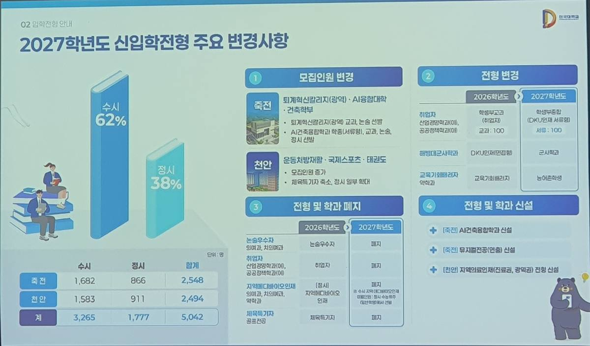
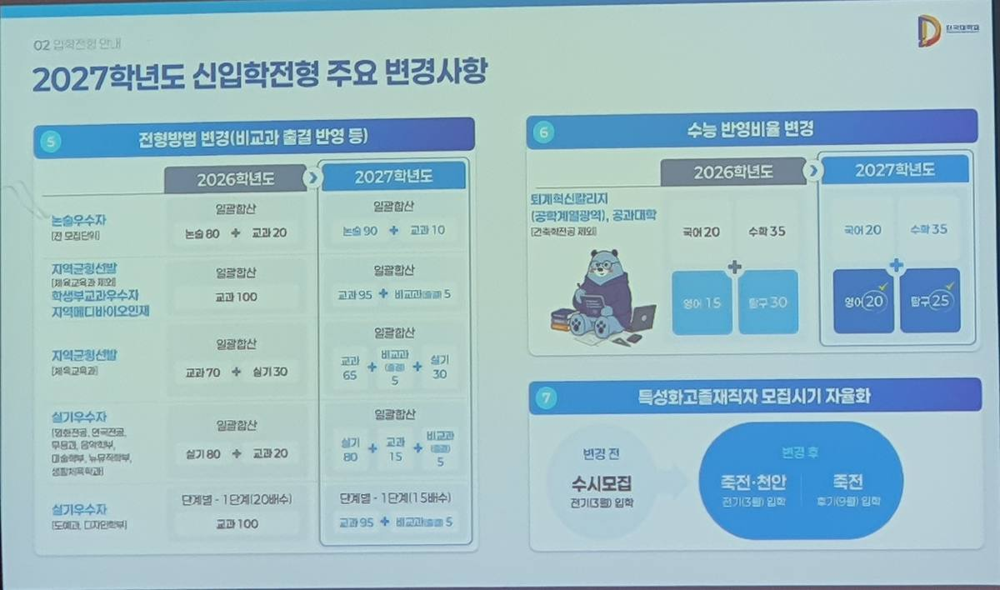
3학생부교과 전형
- 죽전 수능최저: 2개 합 7. 천안 수능최저: 2개 합 8.
- 비교과 출결 5% 반영(2027부터). 논술 전형은 출결 미반영(유일).
- 입시결과: 죽전 교과 2등급 중반, 천안 3~4등급 중반.
4학생부종합 — DK인재 서류형·면접형
- 서류형: 서류 100%, 수능최저 없음. 학업역량 45% 가장 높음(기초학습 가능성 중심).
- 면접형: 1단계 서류(2~3배수) → 2단계 면접(30%). 진로역량 45% 가장 높음(계열 관심·적합성 중심).
- 복수지원: DK인재 서류형 + 면접형 동시 지원 가능(단, 동일 전형명 동일 캠퍼스 중복 불가).
- 평가 3요소: 학업역량(학업성취도+탐구력)·진로역량(관련 이수·선택과목·발전정도)·공동체역량(협업·소통).
- 전 과목 평가(주요·비주요 구분 없음), 세부특기사항(세특) 중요. 모든 영역을 진로와 관련되게 작성하는 것은 신뢰도가 떨어짐.
- 광역·계열 강형: '성장역량'으로 명칭 변경. 특정 전공 미확정 학생 위주로 탐색 과정 전반 평가.
- 면접 역전률: 20% 이상(하위 배수 합격 사례 다수). 개인 학생부 기반 질문, 10분 이내 개인 면접.
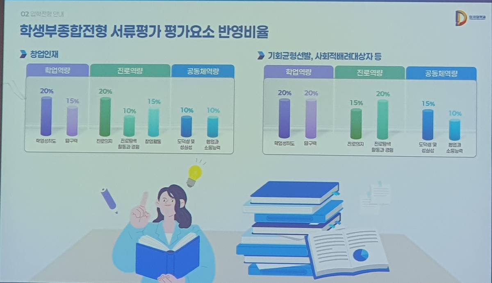
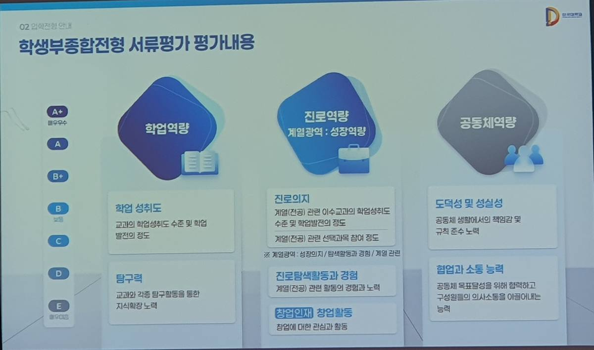
5논술전형 — 계열 광역으로도 지원 가능
- 310명 선발, 수능최저 없음. 2027 처음으로 계열 광역·무전공 광역에서도 논술 선발.
- 인문 시험 보고 들어오면 자연 전공도 선택 가능(시험 종류로 인문·자연 구분, 전공은 입학 후 선택).
- 교과 반영 10%(1~6등급 차이 0.5점) → 논술 점수가 사실상 전부.
6경기 지역 지원 분포
- 전체 신입생 5% 이상이 일반계고 경기 학생. 고양·안산·용인·안양·화성 등에서 주요 지원.
- 고양·성남: SW인재 지원 多. 용인: DKU 서류. 안양: SW. 화성: 농어촌·교과.
- 약학과·의과: 등록자 100% 일반계고. SW인재는 100% 일반계고, 계열 광역.
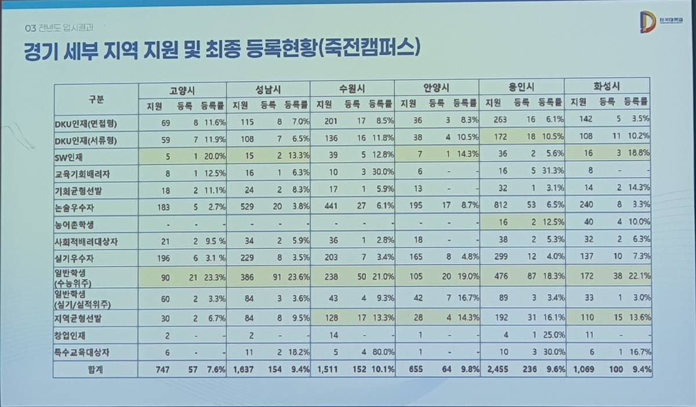
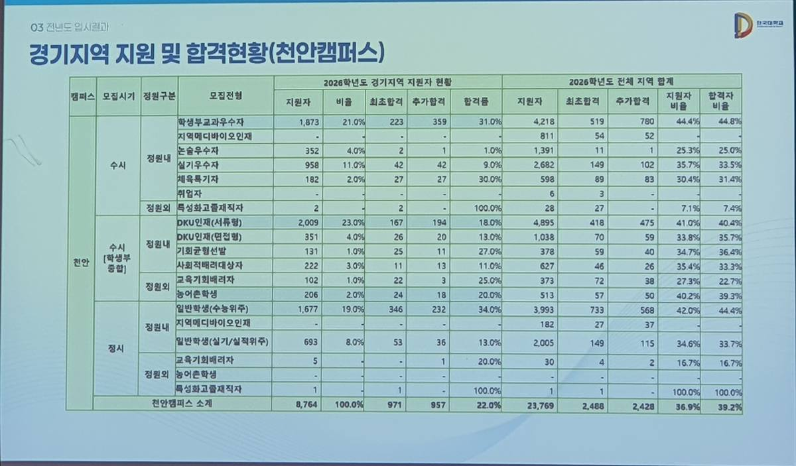
※ 정확한 내용은 대학 홈페이지를 확인하시기 바랍니다.
1한눈에 보는 인천대
국립대학교(인천광역시립). 인천 송도국제도시 위치. 수시 7:정시 3 비율. 총 약 2,700명 선발(정원 내·외 포함). 수능최저 있는 전형은 교과성적우수자 단 하나.
- 동북아통상학부: 4년 전액 장학금 + 기숙사 1순위 + 미국 대학 1년 이수 가능(국립대 등록금으로). GPA 2.5 이상 조건.
- 국립대 등록금으로 미국 대학 1년 이수 → 학비 단위 하나 절약 효과.
- 복수지원: 1~7 그룹별 하나씩 지원 가능. 교과+종합, 교과 내 두 전형 동시 지원 활용 多.
- 신입생 95%가 일반고. 자사고·특목고 연연하지 않아도 됨. 경기 지역 신입생 약 30%.
- 2027 주요 변경: 스포츠과학부 실기우수자전형 — 단계제 폐지, 내신 의미 감소·실기 중요성 대폭 상향. 단과대명 '전문기술대학→인공지능대학', 정보통신공학과→AI정보통신공학부, 임베디드시스템공학과→AI시스템공학과. 지역균형 2028학년도 폐지 예정.
2교과성적우수자전형 — 수능최저 有
- 교과 100%, 수능최저: 2개 합 7이내. 동북아통상학부 2개 합 5.
- 반영 방법: 석차등급 환산점수표 적용, 해당 교과군 전체 과목 모두 반영(상위 N개 방식 아님).
- 진로선택 가산점: 일반 선택 대비 가산비율 0.05배(사실상 무력화, 지원자 이수단위 비슷). 자유전공학부는 0.25배(무려 4배 가산) → 인문·자연 분리 선발(교차 지원 방지 목적).
- 충족률 약 60% 중반(전년 약 50% 중반 → 소폭 상승). 경쟁률 6.6대 1(명목)이지만 최저 미충족 감안 시 실질 경쟁률 더 낮음.
- 입시결과: 등록자 평균 2점대 중후반. 전년 대비 소폭 상승. 학과별 자료는 책자 참고.
3지역균형전형 — 2028 폐지 예정
- 교과 100%, 수능최저 없음. 고교별 추천 인원 제한 없음(일반적인 지역균형과 동일 구조).
- 25학년도 10대 1 → 26학년도 6대 1 급락. 성적도 하락(2.90·2.78 수준). 2028에 폐지 예정이라 변수 큼.
- 교과성적우수자 전형과 성적 차이가 좁혀져 사실상 구분 의미가 희미해짐.
4자기추천(학종) — 면접 포함
- 1단계 서류 100%(학생부종합 평가) → 2단계 면접 30%. 수능최저 없음. 694명 대규모 선발.
- 면접: 교수 2명 · 10분 · 개인 학생부 기반 질문. 서류 역전 약 26%(4분의 1 자리 바뀜).
- 평가요소: 학업역량·진로역량(편차 발생 두 요소)·발전역량·공동체역량(편차 작음).
- 5~6등급 합격자는 자사고 일부. 95%가 일반고.
- 면접 준비 팁: 담당 교수 연구실적 키워드 파악 → 관련 활동과 연결해 심도 있는 대화 가능. 자기소개·마무리 발언 시간은 주도권 있는 시간 → 모호한 열정 표현 대신 전공 적합성 근거 구체 제시.
5정시 및 전체 등록 현황
- 지역균형 등록률이 가장 높음(최저 없어 타 대학과 중복 합격 후 이탈 적음), 수능 일반학생 등록률 91% 수준.
- 교과 충족률 작년 약 60% 초반(전년 50% 중후반 → 상승 추세).
- 학종 적색(불합격) 중 1등급대도 적지 않음 — 일반고 학생이지만 진로·학과 연관 활동 전혀 없는 경우 탈락 사례.
※ 정확한 내용은 대학 홈페이지를 확인하시기 바랍니다.
1한눈에 보는 인하대
인천 미추홀구 위치(인천 1·2호선 접근). 수시 70% 선발. 공과·자연과학·경영·의과·소프트웨어융합 등 12개 단과대학 64개 전공. 경기 지역 출신 신입생 다수.
- 학생부교과·학생부종합·논술·실기/실적 전형 운영. 2027 수시 모집요강 홈페이지에서 확인 가능.
- 2027 특이사항: 실기/실적(체육특기자) 전형 테니스 종목 신설(2026.06 변경). 2027 수시 모집요강 PDF·HWP 다운로드 가능.
- 인하미래인재(면접형)·인하미래인재(서류형) 등 전형명 확인 필요. 지역의사선발과 인하미래인재 의예과 중복지원 불가.
2전형 구조 요약
- 학생부교과: 교과 성적 반영, 전형별 수능최저 상이. 비교과 출결 포함 여부 요강 확인.
- 학생부종합: 인하미래인재(서류형) — 서류 100%. 인하미래인재(면접형) — 1단계 서류→2단계 면접. 수능최저 없음(의예과 제외).
- 논술: 수능최저 없음(일부 전형 확인 필요). 수능 이후 논술 실시 — 수능 결과 보고 지원 여부 결정 가능.
- 지역의사선발: 의예과 대상 별도 전형. 인하미래인재(면접형) 의예과와 중복지원 불가.
32028 예고사항 (참고)
- 정시 수능 정성평가 10% 도입(2027 수능 반영).
- 비교과 출결 5% — 정시 실기에도 확대 반영(기존 전형에서만 적용 → 전체 확대).
- 공과 계열 영어 반영비율 상승 예정.
- 2027 대학입학전형 시행계획 내 세부 반영비율 등은 홈페이지 PDF로 확인.
※ 정확한 내용은 대학 홈페이지를 확인하시기 바랍니다.
1한눈에 보는 성신여대
서울 2개 캠퍼스(돈암·운정). 정원 내 2,063명 모집. 수시 65% · 정시 35%. 논술은 전국에서 가장 이른 10월 3~4일 실시(수능 전). 수능최저는 교과·논술 공통 2개 합 7(학종 자기주도 최저 없음).
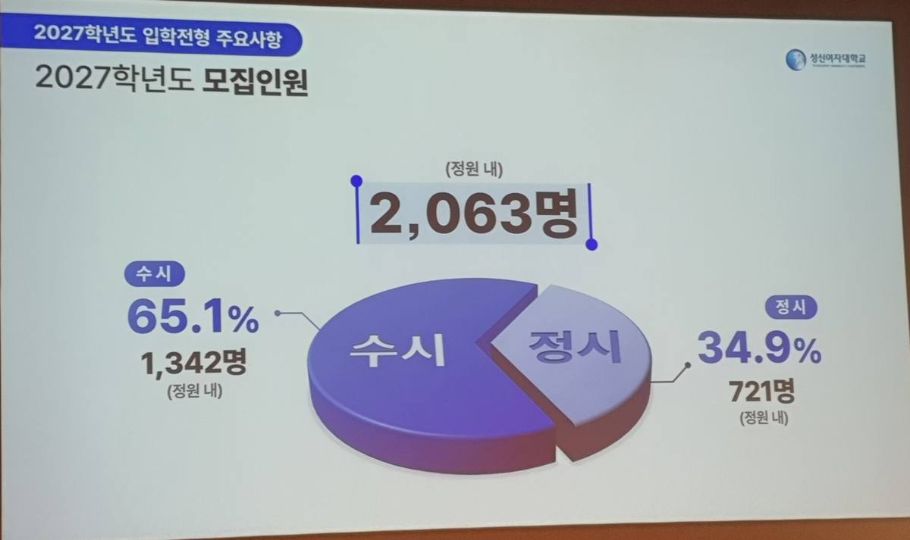
22027 주요 변경사항
- 융합AI반도체학과 신설(41명 선발). 첨단 융합학부 계열로 편성.
- 교과 전형 진로선택 과목 반영 확대: 상위 3개 → 상위 4개 과목.
- 무전공(지역균형): 작년 무전공 단일 선발 → 올해 전공 선발 185명 + 무전공 127명으로 분리. 예체능 무전공 폐지.
- 무전공 트랙: ① 자유전공(간호·사범·예체능 제외 전체 학과 선택 가능) ② 첨단분야 전공(지정 첨단학과 중 선택, 2학년 진급 시 전공 확정).
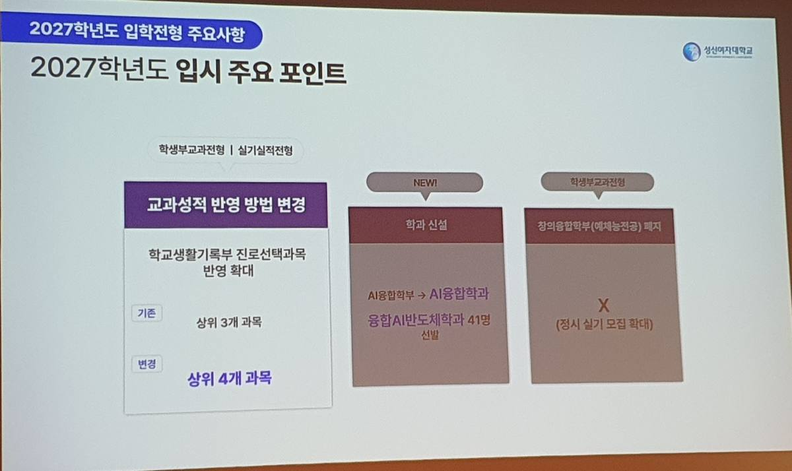
3학생부종합 — 자기주도인재전형 (면접 40%)
- 가장 많은 인원 선발, 수능최저 없음. 면접 40% 반영(전년도부터 유지).
- 면접 실시 전형: 자기주도인재·특수교육대상자. 서류만 평가: 기회균형·재직자 전형.
- 평가요소: 진로역량 50%(서류·면접 공통). 학업역량 30% · 공동체역량 20%. 사범대만 공동체 대신 교직적성인성 20% 반영.
- 블라인드 면접: 부모 직업 언급 시 감점(감점 받으면 3배수 내 경쟁에서 치명적). 면접 지도 시 반드시 주의.
- 경쟁률 7.67:1(전년). 지원 등급대: 3등급 초반 ~ 4등급 중반.
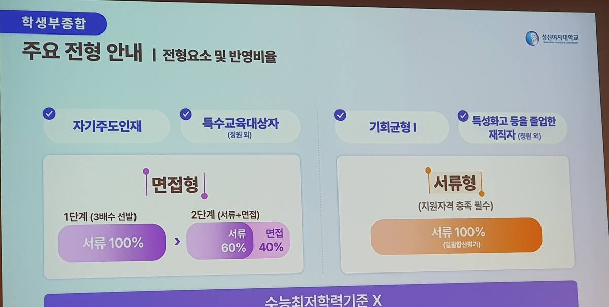
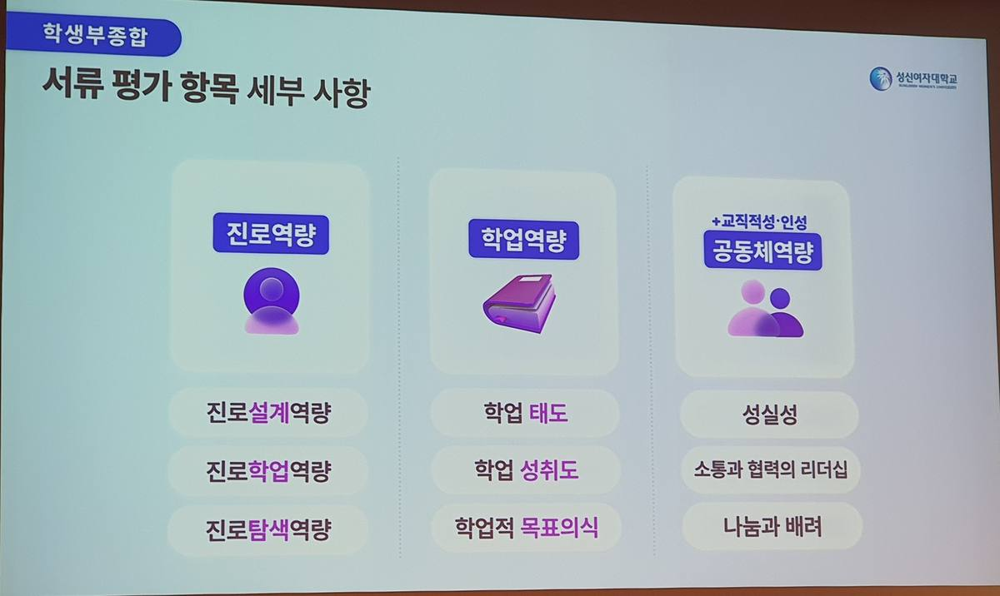
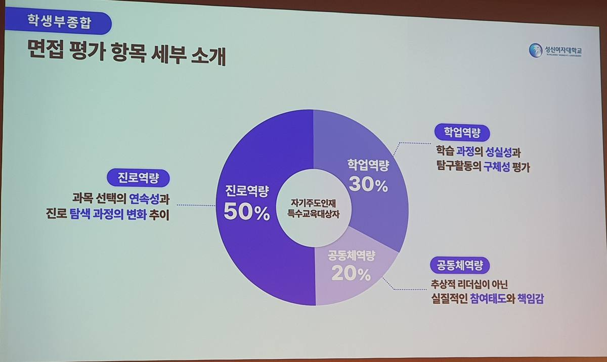
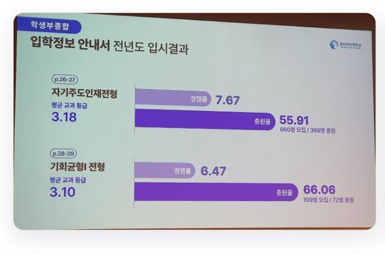
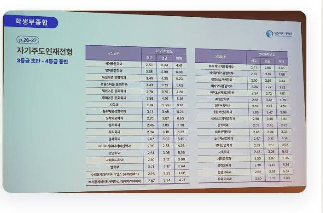
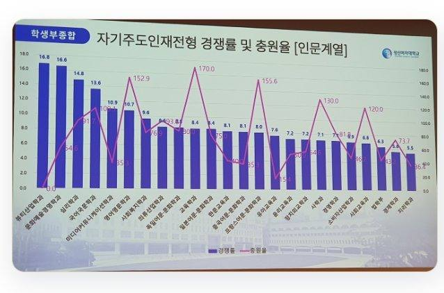
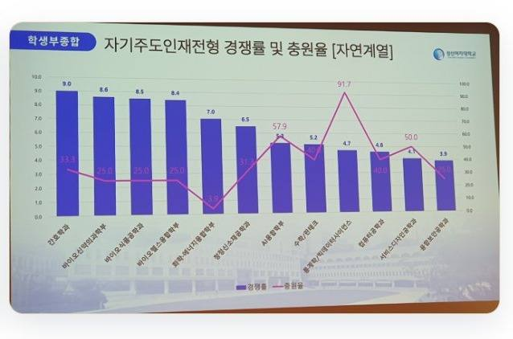
4기회균형전형 — 서류만 평가
- 서류 100%만으로 선발(면접 없음). 인문 계열 기준 경쟁률 높은 학과: BIT산업학과(충원율 0%), 미디어커뮤니케이션학과, 심리학과.
- 자연 계열: 통계학과 충원율이 타 학과 대비 다소 높음(다른 데 합격 후 이탈).
- 합격 등급대: 2등급 초반이 최고, 대부분 3등급 이내. 5등급 이하 합격자는 특목고 학생.
5교과전형 — 지역균형 (수능최저 2합 7)
- 312명 선발(전공 185명 + 무전공 127명). 수능최저 2개 합 7(이암7). 충원율이 다소 높은 편(수능최저 충족 후 타대 이탈 경향).
- 성적대: 1등급 초반 ~ 3등급 이내. 무전공 선발과 개별전공 선발 두 가지 이력으로 참고(책자 확인).
- 진로선택 과목 상위 4개 과목까지 반영(전년 3개에서 확대). 진로선택 A 많은 학생 유리.
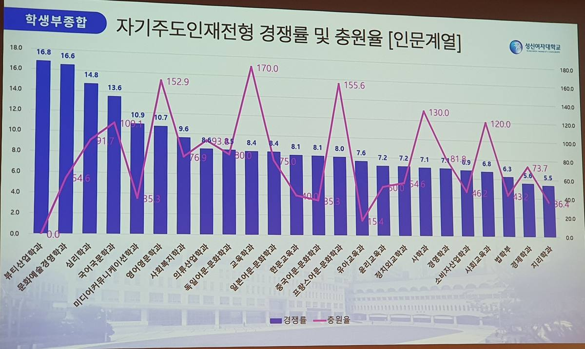
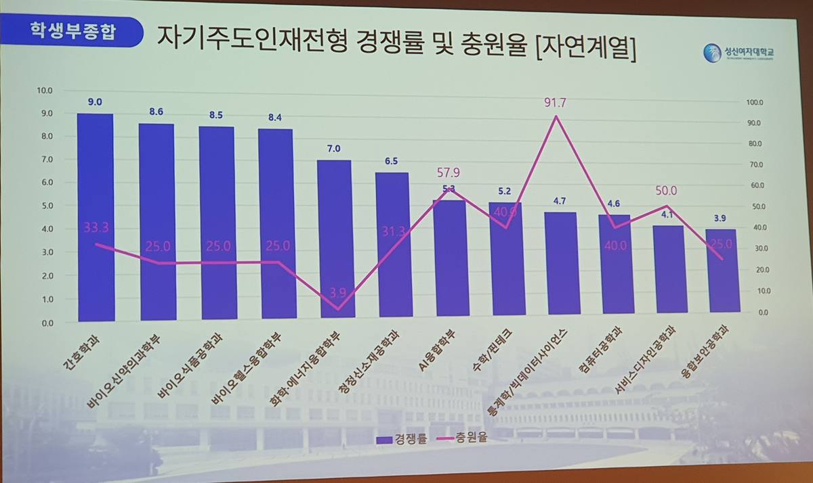
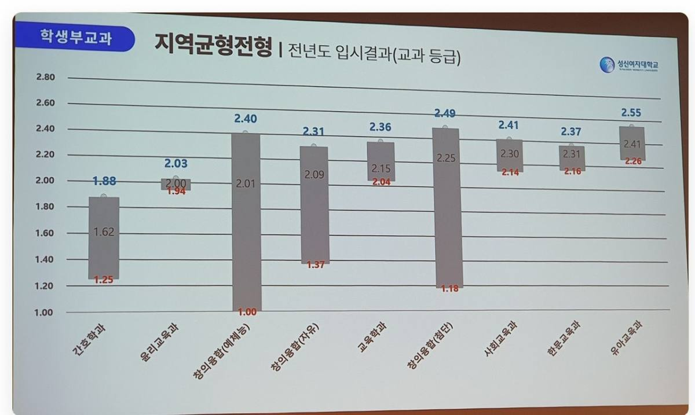
6논술전형 — 수능 전 실시, 실질 경쟁률 낮음
- 159명 선발, 논술 100%, 수능최저 2개 합 7. 10월 3~4일 수능 전 실시.
- 실질 경쟁률(수능최저 충족 기준): 자연계열 12.3:1. 대형 대학 대비 낮아 논술 준비 학생에게 해볼 만한 학교.
- 합격 평균 논술 점수: 약 80점대. 소문항 부분점수 취득으로도 합격 가능(특히 자연계열).
- 충원율 낮은 편(논술 전형의 특징). 경쟁률 높은 학과: 인문 BIT산업, 자연 생명과학·화학 계열.
7경기 지역 지원 현황
- 경기도 지원자 비율: 교과·논술 전형에서 약 40% 가까이 경기 학생이 지원.
- 지원자 많은 시·군: 전체 31개 시·군 중 수원·성남·고양·용인 등 주요 도시 순. 정시에서 성남시 지원자 비율이 상대적으로 높음.
- 학종에서도 경기 학생 합격·등록 비율 상당. 지역균형·논술 전형 경기 학생 적극 추천 가능.
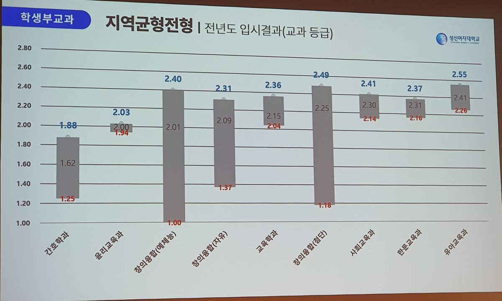
※ 정확한 내용은 대학 홈페이지를 확인하시기 바랍니다.
1한눈에 보는 대진대
경기도 포천 위치(낙엽산 인접). 전체 모집 1,853명. 수시 66.8% · 정시 33.1%. 전 수시 전형 수능최저 없음. 남양주·의정부 등 경기 북부권 학생 비율 높음(수도권 입학자 95%). 신축 기숙사·통학버스 완비.
22027 주요 변경사항
- 교과 성적 반영 과목 확대: 상위 15개 → 상위 18개 과목. 국·영·수·사·과·한국사 중심.
- 진로선택 과목 확대: 최대 5개 → 최대 8개 과목 반영(A=1등급, B=2등급, C=4등급). 진로선택 A가 많은 학생 유리.
- 학과 개편: 스마트건설환경공학과 → AI건설융합공학과 + 스마트시티환경공학과로 분리. 시공공학학과 폐지.
- 밝은사회전형 신설: 사회 기여자·다자녀·다문화 가정 대상.
- 평가 표준화: 기초학습능력·성장잠재력·인성 → 학업역량·진로역량·공동체역량으로 변경(5개 대학 공동 연구 기반).
- 자율전공학부 + 공학자율학부 운영(AI공과대학 내 선택). 진로 미결정 학생에게 추천.
3학생부교과 전형 — 수능최저 없음
- 학생부우수자: 교과 70% + 면접 30%. 면접 문항 사전 공개(모집요강에 2문항 공지), 5분 내외. 응시율 60% 미만(실질 경쟁률 명목의 절반 수준).
- 학교장추천·고른기회·밝은사회: 교과 100%. 고교별 추천 인원 제한 없음.
- 반영 방법: 상위 18과목 + 진로선택 최대 8과목. A=1등급, B=2등급, C=4등급.
- 입시결과: 학생부우수자 전년 성적(15개 기준)보다 올해 18개 기준 시뮬레이션 시 약 0.122등급 하락 예상. 실제 합격선 더 낮아질 수 있음.
- 진로선택 A 8개 확보한 학생 많지 않아 성적 하락 요인. 진로선택 A 많은 학생 교과전형 추천.
4학생부종합 — 윈윈대진전형
- 종합전형 1개만 운영. 1단계 서류 100%(3배수) → 2단계 교과 70% + 면접 30%.
- 평가요소: 서류 — 학업역량 최우선. 면접 — 공동체역량 최우선.
- 진로 탐색 노력이 서류에 잘 드러난 학생, 1단계 합격 가능성 높음. 전공 적합성도 중요하나 진로 탐색 과정 자체를 긍정 평가.
- 면접은 학생부 사실 확인 중심, 10분 내외. 면접 응시율 높음(종합전형 특성).
- 입시결과: 전과목 평균으로 제공(교과 반영 방식 아니므로 참고용). 간호학과 성적 높음.
5정시 — 2과목만 반영 (가·나·다군 전부)
- 정시 33.1%, 614명 선발. 가·나·다 3개 군 모두 모집 → 중복 지원 가능.
- 2개 영역만 반영: 국·영·수 중 최상위 1개(60%) + 나머지 국·영·수·탐·한국사 중 최상위 1개(40%). 수능 전 과목 못 봐도 2개만 잘 보면 됨.
- 영어·한국사 등급별 환산: 3등급도 80점 인정. 이공계열 지원 시 수학 기하·이분 10%, 과탐 7% 가산점.
- 실기우수자: 실기 80% + 수능 20%(수시·정시 공통).
62028 예고사항
- 교과 성적 반영 과목 15개로 재조정(변별력 확보 목적). 사회과학 융합선택 과목 미반영.
- 학생부 종합 제외 전 전형에 출결 10% 반영.
- 종합전형: 서류형·면접형으로 분리 운영 예정.
※ 정확한 내용은 대학 홈페이지를 확인하시기 바랍니다.
1한눈에 보는 차의과학대
의학·한의학·약학·간호 등 보건의료 특성화 대학. 포천(의과·한의·간호)·판교(의과학·약학·생명과학) 이원 캠퍼스. 수시 605명 · 정시 420명 내외 선발. CMC(가톨릭중앙의료원)와 유사한 CHA 계열 병원군(분당차병원·강남차병원 등) 연계 실습 환경.
- LH·기업 맞춤형 인재 양성 협약 등 산학 협력. 재활의학·스포츠의학 계열 학과 운영.
- 전공 선택: 입학 후 2년간 전공 탐색 → 3학년 진급 시 세부 전공 선택. 단, 2학년부터 본격 전공 수업 일부 개시.
- 외국 대학 파트너십(유럽·미국) 기반 교환학생, 복수학위 프로그램 운영. 재활·스포츠계열 약 26% 경기권 등록.
2학생부교과 전형 — 수능최저 필수
- 수능최저학력기준 있음(전형별 상이). 국·수·영·탐 중 일정 조합 충족 필요(요강 확인).
- 학생부 교과 성적 100% 반영. 석차등급 환산. 진로선택 과목 반영 포함.
- 수능최저 충족률이 당락에 결정적. 전년 충족률 약 52% 수준(전형별 차이 있음).
- 합격 후 100% 등록률을 보이는 학과 존재(최초 합격 후 이탈 거의 없음). 안정 지원 시 등록 가능성 높음.
3학생부종합 전형 — 면접 포함
- 1단계 서류 100%(3배수 내외) → 2단계 면접 40%. 수능최저 없음.
- 평가요소: 학업역량·진로역량·공동체역량. 보건의료 계열 특성상 진로 탐색의 구체성과 지원 학과와의 연계성 중요.
- 면접: 개인별 학생부 기반 질문. 약 10분 내외. 의사소통 능력·가치관·전공 이해도 확인.
- 학생부 서류 평가 후 3배수 컷에서 상당한 재배치 발생. 면접 역전 가능성 있음.
- 일반고 학생이 90% 이상(특목고·자사고 경쟁 낮음). 전년 자기소개서 폐지 이후 서류 평가 비중이 세특·진로 활동 중심으로 재편.
4논술 전형
- 인문·자연 계열별 논술 100% (교과 일부 반영). 수능최저 있음.
- 논술 시험 범위: 고교 교육과정 내. 자연계열 수학 중심. 인문계열 국어·사회 통합.
- 실질 경쟁률은 수능최저 필터링 후 낮아짐. 논술 준비된 학생에게 기회 전형.
5정시 — 수능 40점 만점 기준 산출
- 수능 성적 반영(탐구 1과목 반영 대학). 국·수·영·탐 구성별 계열별 반영 비율 상이.
- 정시에서 가·나·다군 분산 모집. 의예·한의예는 정시 경쟁률 매우 높음.
- 수능 반영 점수 40점 만점으로 환산 후 학과별 합산. 영어·한국사는 등급별 환산점 적용.
- 이공계 지원 시 수학 미적분·기하 선택 가산점 적용. 과탐 선택 시도 가산점.
※ 정확한 내용은 대학 홈페이지를 확인하시기 바랍니다.
1한눈에 보는 덕성여대 — 통합 모집 특화
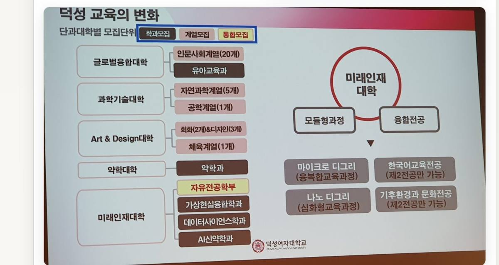
정원 약 1,250명의 여자대학. 37개 전공 중 5개(유아교육·약학·가정·데이터사이언스·AI신한학과)만 단위 전공 모집, 나머지 32개 전공은 모두 계열 통합 모집. 수시 799명(62.4%) · 정시 484명(37.7%) 선발. 통합 선발 6년차, 자유전공학부 추가 신설.
22027 주요 변경사항
- 교과 진로선택 과목 반영 확대: 상위 3개 교과 → 전과목 반영(진로선택 10%).
- 수능최저 완화: 약학대학 — 기존 바탕(과탐) 고정 → 사탐도 반영 가능. 단, 영어와 사탐 동시 반영 불가(영어 반영 시 탐구는 과탐만, 사탐 반영 시 영어 제외).
- 논술전형 변경: 유아교육과 논술 추가 선발. 글로벌융합대학 제2외국어·한문 응시자 영어 대체 인정.
- 정시 신설: 자유전공학부 전용 수능우수전형Ⅱ — 학생부 10% 반영(스펙트럼 넓게). 수능 반영 비율 변경: 기존 35-35-20-10 → 30-25-25-10%(고루 잘하는 학생 유리).
- 탐구 1과목 반영 대학(정시): 탐구 2과목을 모두 잘하기 어렵기 때문에, 잘하는 1과목만 반영되므로 경기권 학생에게 유리.
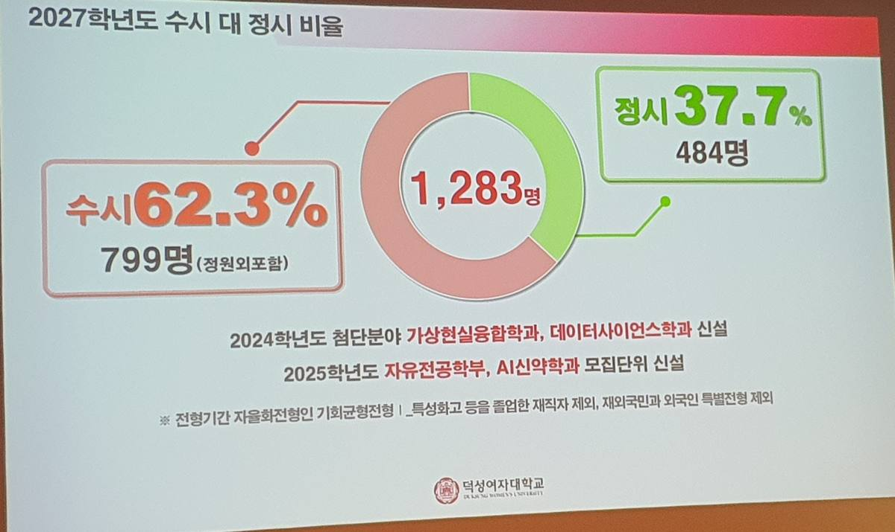
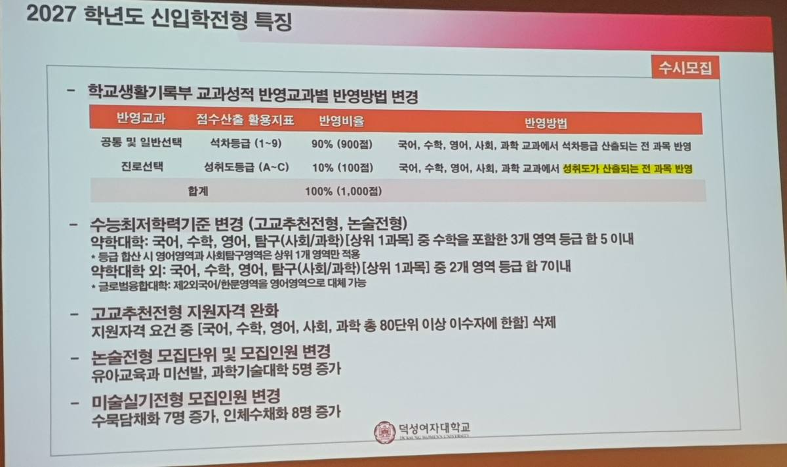
3학생부교과 — 고교추천전형
- 교과 100%, 수능최저 있음. 공통·일반선택 90% + 진로선택 10%(올해부터 전과목 반영).
- 등급 간격: 5등급까지 1점씩, 6등급부터 확대. 진로선택 A=1, B=2, C=4등급 환산.
- 충원율이 다소 높은 편(다른 대학 동시 합격 후 이탈). 합격 등급대: 2등급 중후반 ~ 3등급 중반.
- 2026학년도에 글로벌융합대학 35명→25명, 자유전공 88명→50명으로 모집 인원 감소. 경쟁률 소폭 하락. 올해 반등 예상.
4학생부종합 — 덕성인재1(서류형)·2(면접형)
- 덕성인재1(서류형): 서류 100%. 기회균형 대부분. 수능최저 없음.
- 덕성인재2(면접형): 1단계 서류(3~4배수) → 2단계 면접 40%. 상위 30대 대학 평균 면접 반영 30% 대비 높은 비중. 1단계 합격 배수를 넓게 잡아 면접 역전 기회 확대.
- 서류 외부 교과 성적 기준 순위에서 3배수 밖에서 → 안으로 진입한 학생 약 38%. 면접 후 최초합격권 외에서 진입 약 46.7%.
- 평가요소: 미래인재역량(기초학업, 국·영·수 중심) + 자기주도성·발전성 + 공동체역량. 계열 일치보다 탐구 과정의 자기주도성·성장성 중시. 통합 모집 특성상 특정 전공 일치 집착 불필요.
- 면접 평가: 서류신뢰성 50% + 종합사고 30% + 공동체역량 20%. 수능 이후 11월 22일 시행.
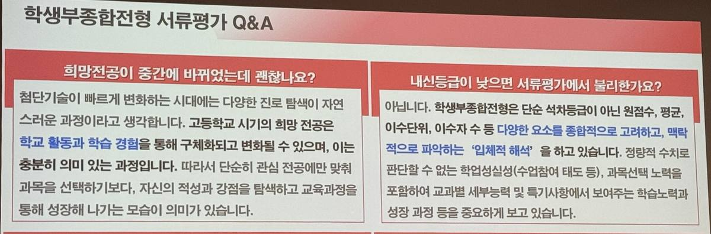
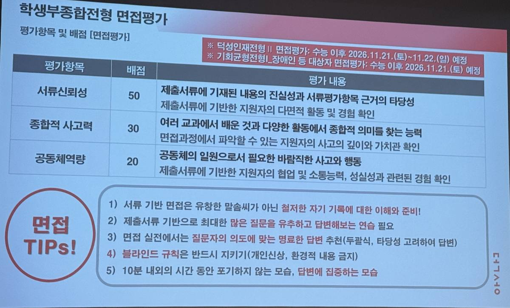
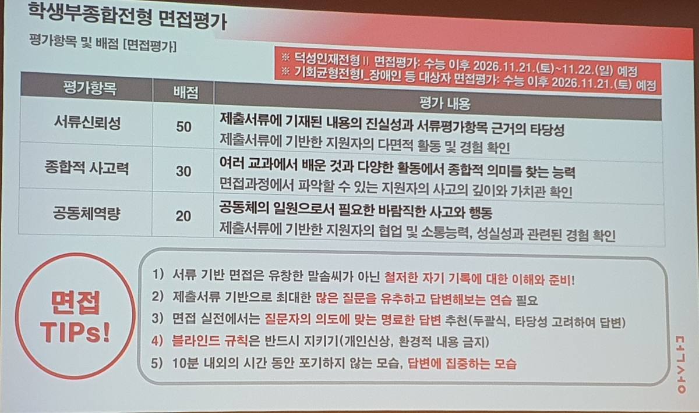
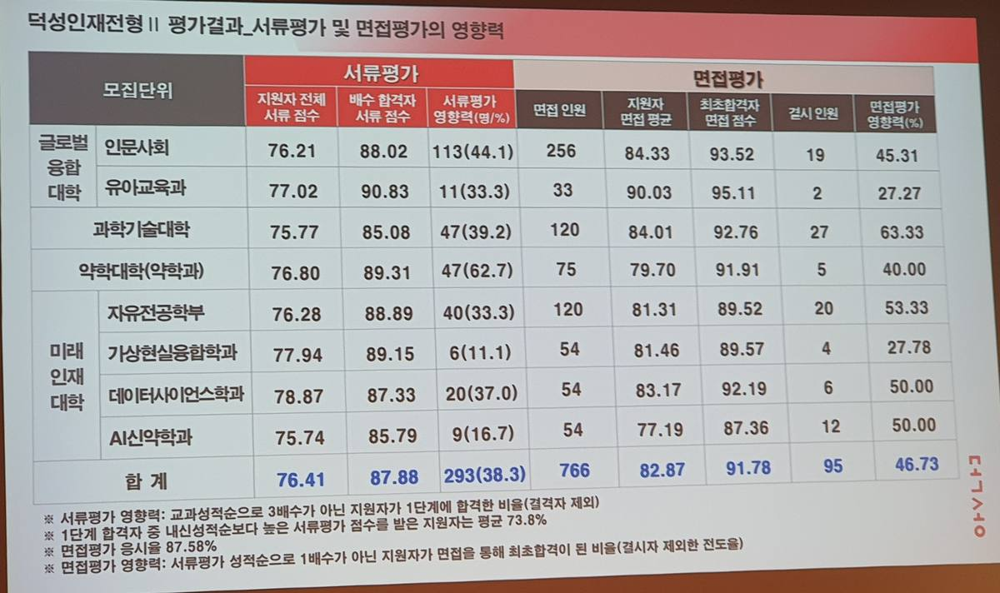
5논술전형 — 논술 90%
- 논술 90% + 교과 10%. 수능최저 있음. 인문·자연·약학 계열별 출제.
- 인문·자연 2문항, 약학 3문항 출제. 논술가이드북 홈페이지 공개(6월). 모의논술 7월 15~18일.
- 충원율 낮음(논술 합격자 대부분 등록). 경쟁률 높아도 수능최저 필터링 후 실질 경쟁률 낮아짐.
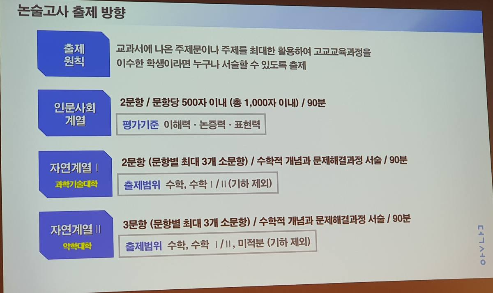
6정시
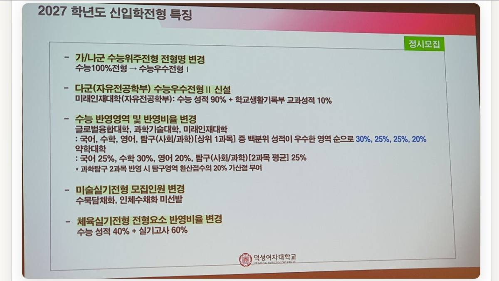
- 수능우수전형Ⅰ(가·나군) 전형명 변경. 다군 수능우수전형Ⅱ 신설 — 미래인재대학(자유전공학부): 수능 90% + 교과 10%.
- 글로벌융합대학·과학기술대학·미래인재대학: 국·수·영·탐(상위 1과목) 백분위 우수 순 30%·25%·25%·20%. 약학대학: 국 25%·수 30%·영 20%·탐(2과목 평균) 25% + 과학탐구 2과목 시 가산점 20%.
- 미술실기전형 수묵담채화·인체수채화 미선발. 체육실기전형: 수능 40% + 실기 60%.
7경기 지역 지원 현황
- 경기 학생 수시 지원 비율 35%, 합격률 42.45%(지원 대비 합격률 우수). 정시도 경기 지원자 32.8%, 합격 36%.
- 수시 교과·논술 전형 지원 비율이 학종보다 높음. 논술 전형 경기 학생 합격 성과 상당.
- 안정형 지원 시 합격률이 높아짐. 2~3등급 초반 학생의 안정 지원이 효과적.
※ 정확한 내용은 대학 홈페이지를 확인하시기 바랍니다.
1한눈에 보는 상명대 — 전공 선택 100% 보장
서울(종로구)·천안 이원 캠퍼스(동일 이름 학과 없음). 서울 수시 1,323명 선발. 계열(인문·이공·예체능) 통합 선발 후 1학년 1학기 내에 원하는 전공 100% 선택 보장. 재작년 1명, 작년 2명 제외 전원 희망 전공 배정.
- 2027 변경: 팬테크정보빅데이터융합·스마트생산 → 데이터과학전공 통합 선발. 학과명 변경 반드시 안내.
- 사범대 외 문헌정보학·컴퓨터과학·식품영양학 전공 — 비사범계이지만 교직이수 가능.
- 단, 4번 대(일부 학부)·휴먼AI공학·데이터과학·음악학부는 계열 이동 전공 선택 불가.
- 캠퍼스 간 전과 운영: 천안→서울 이동 가능. 26명 모집, 1학년도 신청 가능. 작년 26명 모집에 90명 지원(경쟁률 3.36:1), 1학년 44명 지원 중 14명 합격.
2학생부교과 — 고교추천전형 (수능최저 없음)
- 추천 인원 제한 없음·수능최저 없음(2026학년도부터). 학생부 교과 100%.
- 전과목 반영(석차등급 + 진로선택 ABC). 특정 과목 가중치 없음. 실기·봉사 가산점 없음. 전과목 골고루 잘하는 학생 유리.
- 추가 합격 인원 많음. 영어교육과 11명 모집→41명까지 추합. 자유전공 인문 경쟁률 9.81:1이지만 추합 161명. 최초 합격만 보지 말고 추가 합격까지 포함해 지원 전략 수립.
- 경기 지원자 44.48%, 합격자 49.28%, 등록자 49.1%. 경기 지역 학생에게 유리한 구조.
- 경기 학생 평균 등급 2.7(안정권 지원이 많아 전체 평균보다 높음). 모집단위별 편차 크므로 단위별 확인 필요.
- 자연계열에서 낮은 등급대 합격 사례 존재(경쟁률이 낮았던 모집단위). 일반고 학생만 지원(과학고·국제고 미지원, 특성화고 불가).
3학생부종합 — 상명인재전형
- 155명 선발, 서류 100%, 수능최저 없음. 일부 전공 제외 계열 통합 모집.
- 평가: 학업역량 35% · 진로역량 45% · 공동체역량 20%.
- 진로역량 45%로 가장 높음. 진로가 명확히 확정되지 않아도 탐색·경험·성장 과정이 드러나면 긍정 평가.
- 학업역량: 등급뿐 아니라 탐구 과정·과목 간 연계성 등 함께 평가. 동일 등급도 세특 내용에 따라 다른 평가.
- 면접 전형: 스포츠건강관리·조형예술 전공만 면접 실시. 진로역량과 공동체역량 중심 질문.
- 일반고 학생 지원 82.2%, 합격 92.9%. 일반고 학생 충분히 경쟁력 있음.
- 교과-종합 복수 지원 가능(전형명 다를 때). 교과 우수 + 학생부 우수 학생은 두 전형 동시 지원 권장.
4논술전형 — 수능최저 없음, 경기 학생 성과 높음
- 수능최저 없음. 교과 10% + 논술 90%. 3년째 운영.
- 출제: 인문 국어 8문제·사회 2문제(총 40문제), 자연 수학 8문제·국어 2문제. 평균 합격점: 인문 93점, 자연 69점 내외.
- 내신 5등급 학생도 논술로 합격 사례. 논술·수학·언어 강한 학생에게 적극 추천.
- 경기 학생 합격률 높음. 일반고 합격 비율 압도적(특목·자사고 유리하지 않음).
- EBS·교과서 수준에서 출제. 과도한 사교육 없이 준비 가능.
5정시 — 탐구 1과목 반영
- 인문: 국어 35% · 수학 25% · 영어 20% · 탐구 20%.
- 자연: 국어 25% · 수학 35% · 영어 20% · 탐구 20%. 탐구 사탐·과탐 모두 1과목 반영(교차 지원 가능).
- 자연 지원 시 수학 미적분·기하 선택 가산점 10%, 과탐 가산점 5%. 인문 지원 시 가산점 없음.
- 수능 전 고교추천 일부 선발, 이월 인원 정시 반영. 농어촌·특성화고 별도 선발(계열별 통합 선발).
※ 정확한 내용은 대학 홈페이지를 확인하시기 바랍니다.
1한눈에 보는 대구가톨릭대
1914년 뉴스티나 신학교로 출발, 경북 경산시 효성캠퍼스(주캠퍼스) + 대구 남구 루가캠퍼스(의·간호 2학년~) 운영. 재학생 1만 명 규모. 대구 지하철 1호선 '대구가톨릭대학교역' 직결 — KTX 동대구역에서 환승으로 한 번에 접근 가능.
- 글로벌비즈니스·바이오헬스·인공지능·의과·간호·약학·공과·사회과학·사범·음악·디자인 등 전 계열 갖춤.
- 병원 혜택: 재학생 대학병원 진료비 20% 할인. 대구가톨릭대학병원(남구) — 2024 세계 최고병원 지방 1위.
- 기숙사: 1·2·4인실. 1학년 우선 배정. 경기권 학생 기숙사 배정 관련 문의는 입학처로 연락 시 해결 지원.
- 장학금: 스마트인재장학금(최초 합격 즉시 등록 시 지급, 인문·이공·예능 계열별). 스텔라장학금(교내 활동 포인트 → 학기말 지급). 해외교류 장학금 등 다양.
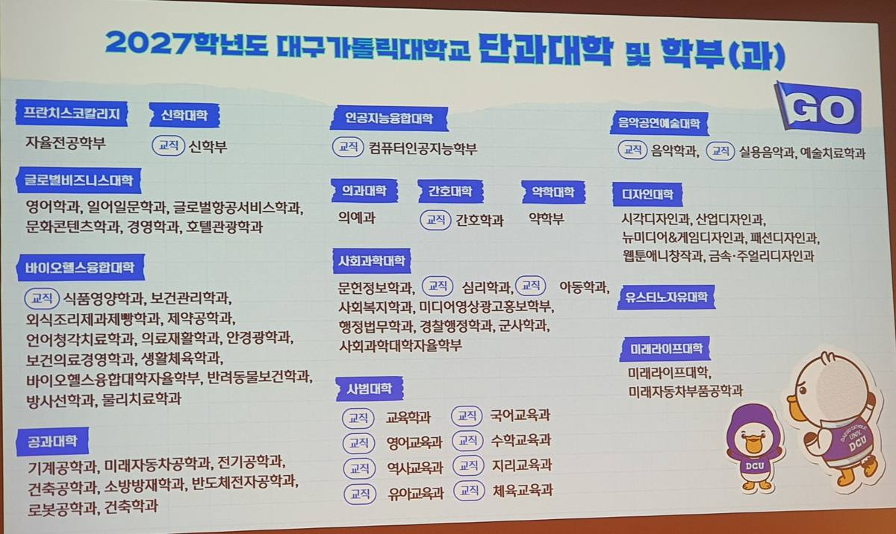
2교과 성적 산출 — 상위 과목 선택 반영
- 교과 80% + 출석 20% 반영. 과목 선택 방식: 국·수·영·사·한국사·과 중 등급 높은 상위 8개 과목 자동 선택 → 실제 성적보다 유리하게 산출.
- 진로선택 과목 4개 추가 반영(총 12과목). 의예과·약학부는 전과목 반영 + 진로선택 3개(수단위 반영).
- 생활체육·예능계(음악·디자인): 상위 8개 과목 중 진로선택 최대 2개 포함 가능.
- 진로선택 ABC 환산: 일반학과 A=1등급·B=3등급·C=5등급. 의예과·약학부는 가산점(A=1.0, B=0.9, C=0.8) 적용.
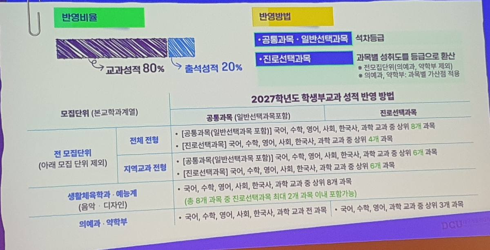
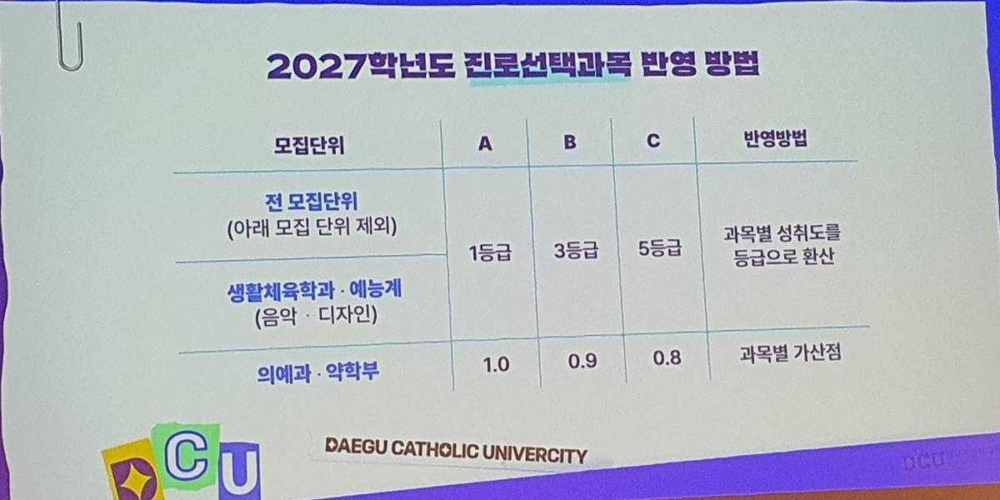
3전형 구조 — 교과·종합·실기 (수능최저 4개 학과만)
- 교과전형(BEST)·지역교과전형: 의예과·신학부 외 면접 없음. 교과로 지원 후 대기하면 결과 확인. 충원이 많이 이루어지는 전형. 중위권 학생 상향 지원 후 충원 기대 전략 유효.
- 가톨릭지도자추천전형: 신부님 추천서 필요. 16명 소수 모집이지만 선호 학과 포함.
- 종합전형(BEST): 글로벌항공서비스학과 외 면접 없음. 서류 100% 선발. 교과보다 성적 스펙트럼이 넓어 7등급대도 합격 사례 있음(생기부 활동 중요).
- 수능최저: 의예과·약학부·간호학과·체육교육과 4개만 적용. 나머지 전 학과 수능최저 없음 → 수능 안 봐도 지원 가능.
- 복수지원: 전형별 1개 모집단위 × 총 6회 가능. 계열 구분 없음(문·이과 교차 자유). 3회 이상 지원 시 전형료 면제.
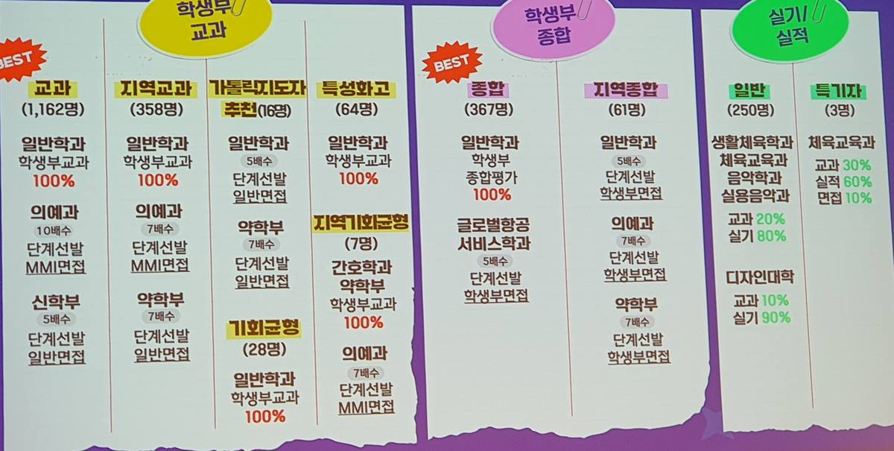
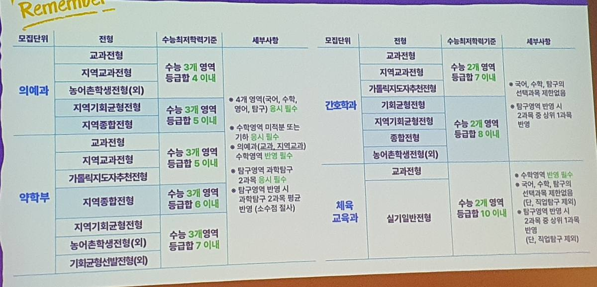
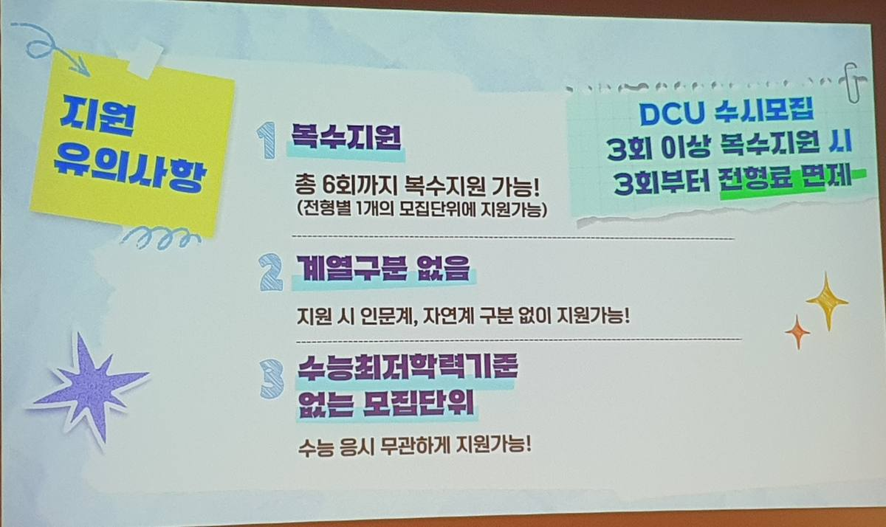
4교과전형 입시결과
- 일반 학과 합격 등급대: 대부분 4~6등급대. 의·약 계열은 1~2등급대.
- 전년도 100% 충원 완료. 교과전형 등록률 92.7%(전체 91.5% — 충원 포함 기준).
- 경기 지역 합격 비율 약 50%에 육박. 지원하면 많이 합격하는 구조.
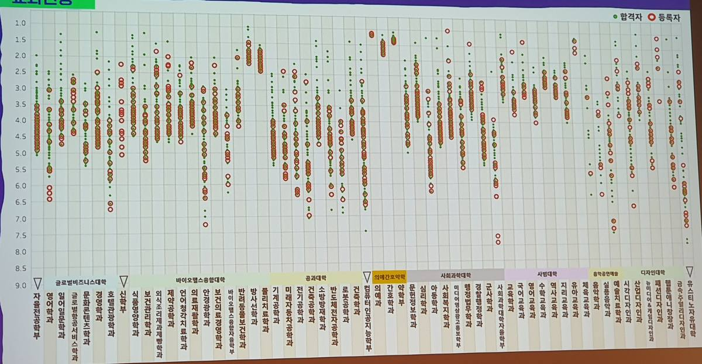
5학생부종합전형 — 서류 100%
- 서류 100%, 면접 없음(글로벌항공서비스학과 제외). 평가요소: 학업역량 40% · 진로역량 40% · 공동체역량 20%.
- 학업역량 40% 중 학업성취도(등급)는 10%뿐 → 나머지는 탐구력·전공교과·진로탐색 활동. 내신이 낮아도 생기부 활동으로 충분히 보완 가능.
- 진로가 중간에 바뀌어도 괜찮음 — 탐색·노력 과정 자체를 긍정 평가.
- 종합전형 등록률 92.7%, 성적 스펙트럼 교과보다 넓음.
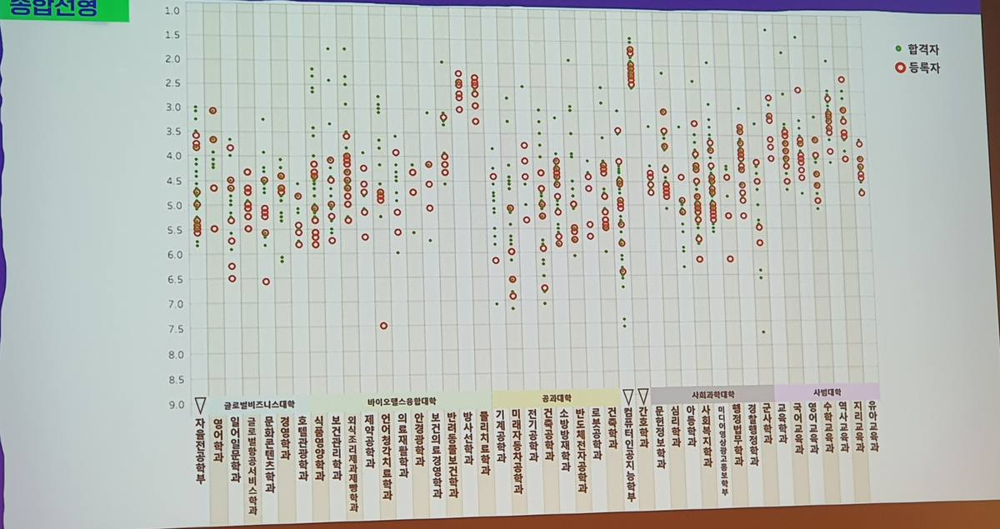
6경기 지역 지원 현황
- 경기 학생 지원 현황: 교과·종합전형으로 가장 많이 지원. 합격 비율 약 50% 육박.
- 시군별 지원 상위: 고양·평택·수원·화성·용인·파주·남양주·안산·시흥 순. 합격 비율은 양주시(61.7%), 고양시(57.1%) 등 높음.
- 경기권 선호 학과: 약학부·보건계열 외에 외식조리제과제빵학과·사범대 계열·심리학과·경영학과 등 일반 학과도 다수.
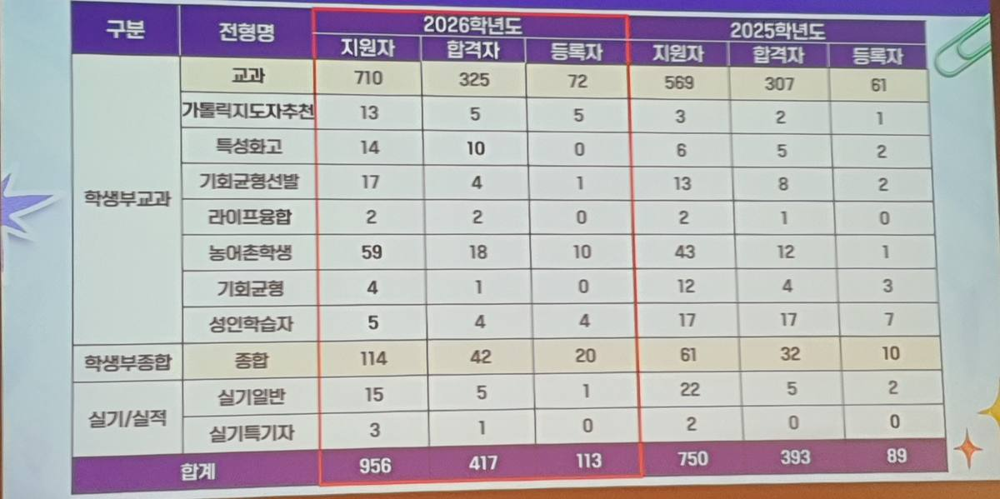
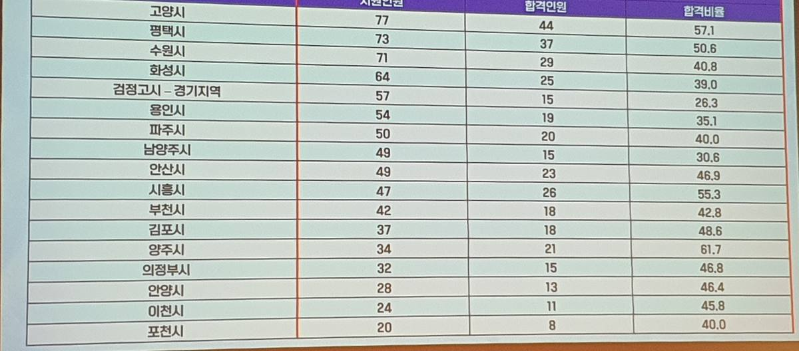
7의예과·약학부 입시결과
- 의예과 교과전형: 평균 1.17등급, 100%컷 1.21등급. 지역교과전형: 평균 1.63, 100%컷 2.38.
- 약학부 교과전형: 평균 1.36, 100%컷 1.42. 지역교과전형: 평균 1.54. 노란색 강조 행은 경기권 학생이 접근 가능한 전형.
- 수단위(이수단위 수)가 높은 과목에서 좋은 등급이 유리 — 고등급·고수단위 과목 조합이 핵심.
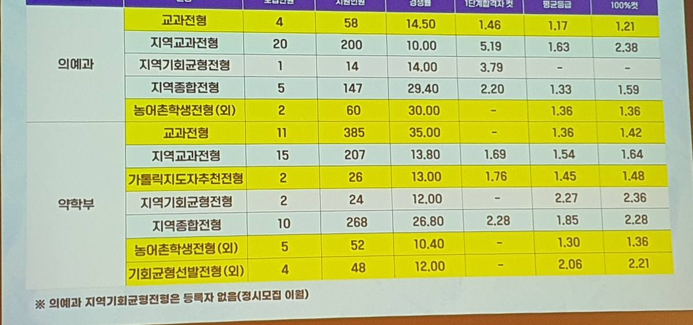
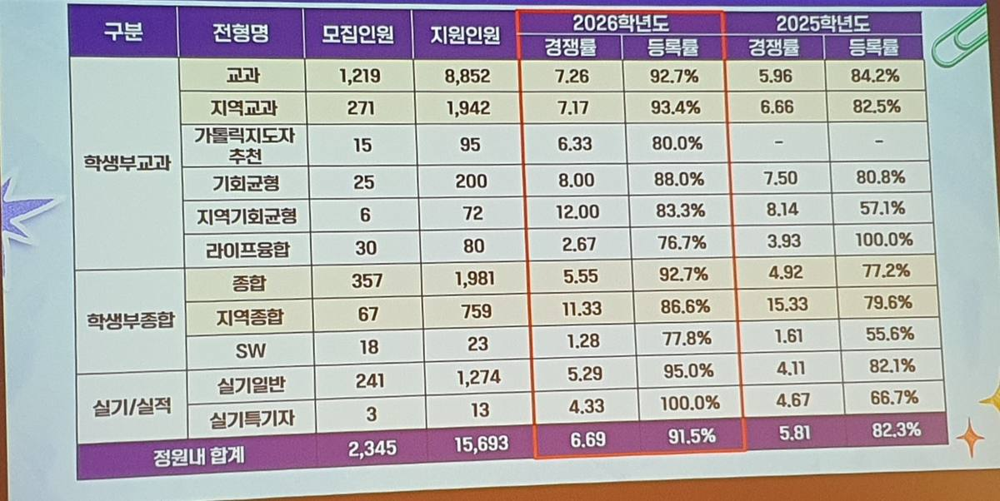
※ 정확한 내용은 대학 홈페이지를 확인하시기 바랍니다.
1한눈에 보는 한국기술교육대
고용노동부가 1991년 설립한 국립법인대학(법적 사립, 실질 국립). 충남 천안 소재. 정부 출연금 연 1,300억 규모. 공학 실습 커리큘럼 비중 50%로 타대학 대비 월등히 높음. 전국 4년제 취업률 1위(82.8%, 교육부 건강보험 기준).
- 모집단위: 공학융합·ICT융합·사회융합 계열 총 14개. 계열별 자율전공 3개 + 미래융합학부(완전 자유전공, 2학년 때 계열 제한 없이 전 전공 선택 가능).
- 등록금: 공학 계열 학기 168만원 / 사회 계열 166만원(국립대 수준). 1인당 평균 장학금 489만원 → 공대 기준 연 실부담 약 87만원.
- IPP제도: 졸업 필수 과목으로 기업 장기 현장실습(3~6개월). 현재 36개 대학이 동 모델 도입. 신입처럼 일 못한다는 소리 안 들음.
- 전과: 계열·전공 제한 없음. 1학년도 전과 가능(2025년 내규 개정). 전과 승인률 69%. 성적 낮아도 전략적 전과 활용 가능.
- 조기취업형 계약학과(3년제): 입학과 동시에 취업 확정, 2~3학년은 기업 근무+주말 수업, 졸업 즉시 정직원.
- 기숙사 수용률 56%(3,500명 재학 기준). 입지가 도심에서 떨어져 있어 생활 집중 환경.
2학생부종합 — 서류형·면접형 (수능최저 없음)
- 서류형: 학생부 서류만 평가. 교수님이 직접 사정(제자 뽑는 마음). 수학·과학·공동체역량 중시. 내신만으로 합·불 판단 어려움. 전공 관심도, 공동체 적응력 중요.
- 면접형: 1단계 서류(4배수) → 2단계 서류 60% + 면접 40%(실질 50% 이상). 교수 2인 각 5분씩 10분 개별 면접. 교복 착용 불가.
- 서류형 평균 3.7등급, 면접형 평균 4.1등급. 메카트로닉스공학부 최저 합격 5.58등급 사례 있음 — 면접 역전 폭 매우 큼.
- 수학·물리 관련 세특, 랩실 공동체 활동이 강점. 학생부 내용 기반 함정 질문 대비 필수.
3학생부교과 — 수능최저 있음 (2합8, 국어/수학 필수)
- 수능최저: 2개 합 8 이내. 공학·ICT는 반드시 수학 포함. 사회계열은 국어 포함 필수.
- 반영 방법: 공학/ICT — 국·수·영·과 석차등급 과목. 사회 — 국·수·영·사 석차등급 과목. 과목별 가중치 없이 단순 평균. 진로선택 상위 3개 과목 성취도 가점 추가.
- 편차 큰 학생 주의: 7등급 이하 과목 혼재 시 불리. 최하등급 6등급 이내 안정적인 학생이 유리.
- 교과 전형 평균 3.5등급(전체 평균). 전공별 편차 있으므로 학과별 확인 필요.
- 인문 자율전공(사회계열)의 입결이 공학 자율전공보다 낮음 → 공학 지망이지만 교과가 부족한 경우 사회계열로 지원 후 전과 전략 가능.
4논술전형 — 충남·천안 유일 논술
- 충남권 거의 유일 논술 전형 운영. 수능최저 없음. 내신 불리해도 논술로 승부 가능.
- 공학·ICT: 수학(약술형 수리논술). 사회: 언어논술(비문학 서술형). 7월 중 온라인 모의논술 실시 예정.
- 난이도: 전년도 다소 높았으나 2027학년도 하향 예정. EBS·교과서 수준에서 대비 가능.
5정시
- 자율전공으로만 150명 선발. 수능 100%.
- 공학·ICT 계열: A형·B형 중 유리한 점수 적용. 미적분·기하 선택 시 수학 가산점 10%.
- 인문 자율전공 입결이 낮아 공학 지망 학생의 우회 지원 전략으로 활용 가능(입학 후 동일 커리큘럼).
※ 정확한 내용은 대학 홈페이지를 확인하시기 바랍니다.
1한눈에 보는 서울과기대
서울 노원구 소재 국립대학교. 8개 단과대학 33개 학과. 2027 신설: 양자융합물리학과(수시 13명·정시 4명). 수시 약 70% · 정시 약 30% 선발.
- ST 자유전공학부: 대학 내 모든 학과 계열 구분 없이 선택 가능(수시 학종 18명·논술 162명·정시 다군 26명 선발, 2027 신설).
- 단과대학별 자유전공학부 유형Ⅱ: 단과대학 내 원하는 학과 선택(정시 가·나군 159명, 일부 수시 교과·종합 선발).
- 수시 전형 구성: 교과 20% · 종합 48% · 논술 13% · 실기 19%.
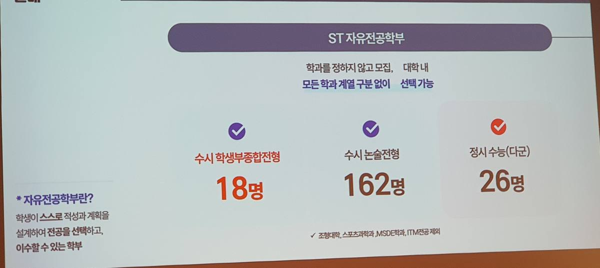
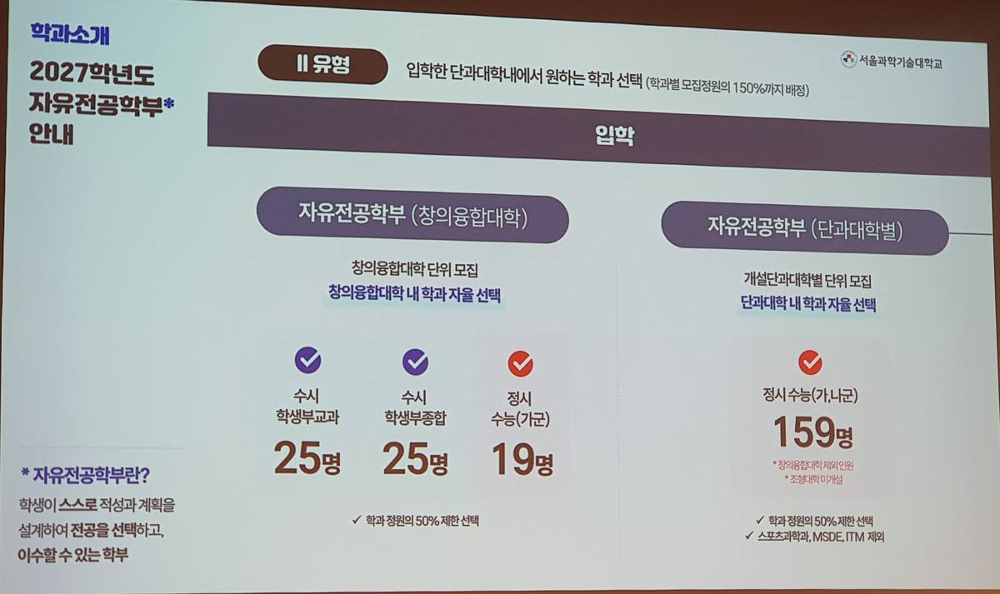
2학생부교과 — 고교추천전형
- 내신 100%, 수능최저 2합 7(수도권 최저 수준). 자연: 국·수·영·과. 인문: 국·수·영·사. 건축학부: 국·수·영·사·과·한국사 전 반영.
- 이수단위 기준 완화: 80단위(전년 90단위). 학생 수상 부담 감소.
- 평균 등급 2.02. 최고 1.63(MSD학과), 최저 2.31(영어영문학과). 경쟁률 5:1, 충원율 156%, 최저충족률 92.9%.
- 경기 지역 합격률 48.77%(전국 50.1% 대비 소폭 낮음). 추가합격 많아 적극 지원 전략 유효.
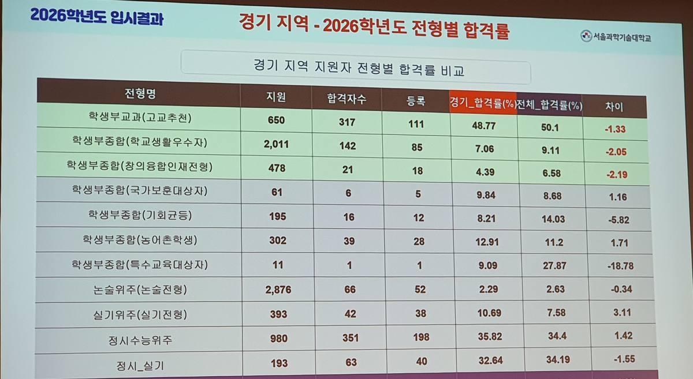
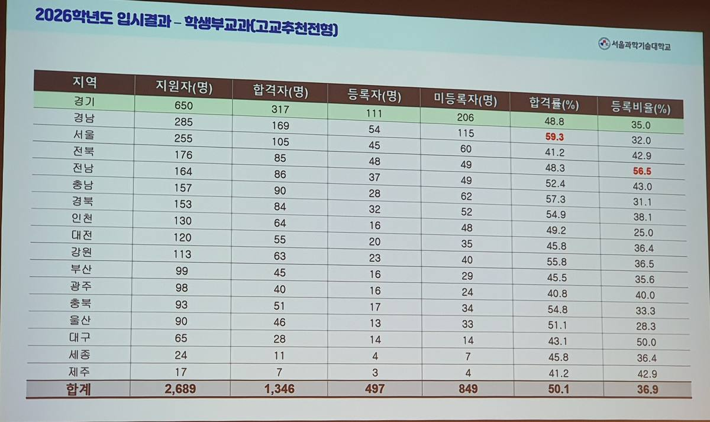
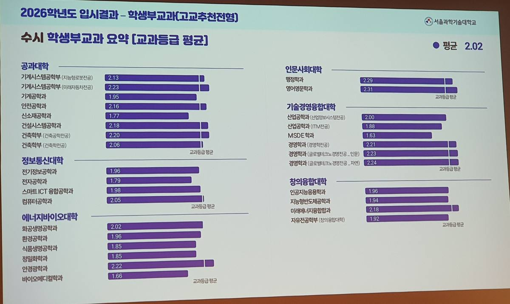
3학생부종합 — 학교생활우수자·창의융합인재·기회균등
- 1단계 서류(3배수) → 2단계 면접 30% 추가. 수능최저 없음.
- 평가요소: 학업역량 25% · 진로역량 45% · 공동체역량 30%. 진로역량 45%로 가장 높음. 면접도 동일 비율 적용.
- 기회균등 86명 선발(타 대학 대비 높은 비율). 해당 학생 적극 추천.
- 경쟁률 17.9:1, 충원율 54%, 면접 응시율 90%. 실질 경쟁률 1단계 1.7:1. 1단계 합격 시 면접 역전 충분히 가능.
- 합격 등급대: 2.5~3.5등급 구간에 가장 조밀하게 분포. 최저 합격자 포함 시 스펙트럼 넓음.
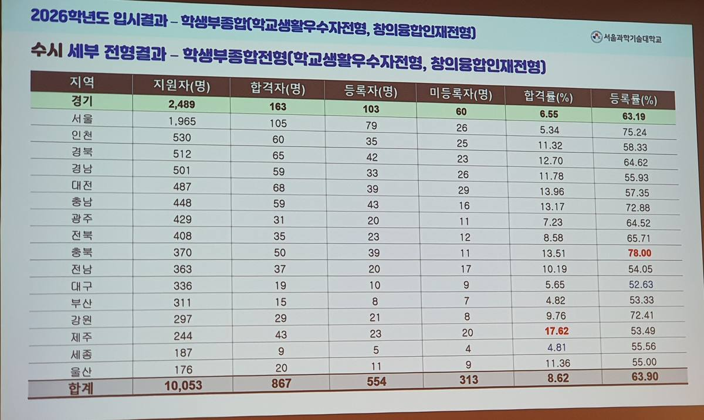
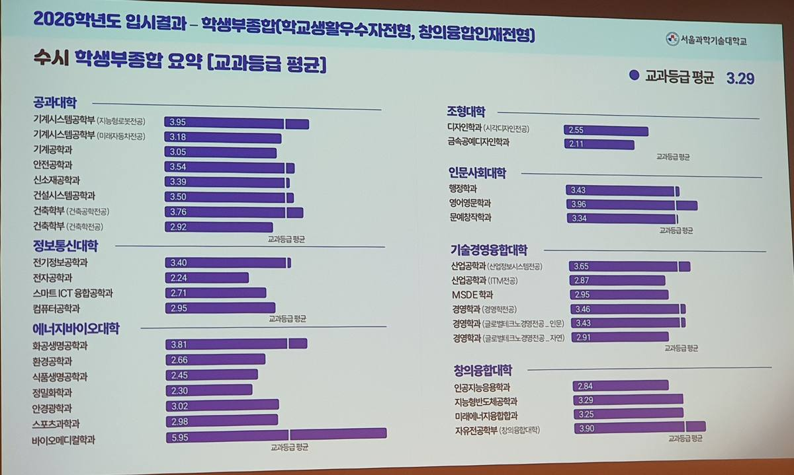
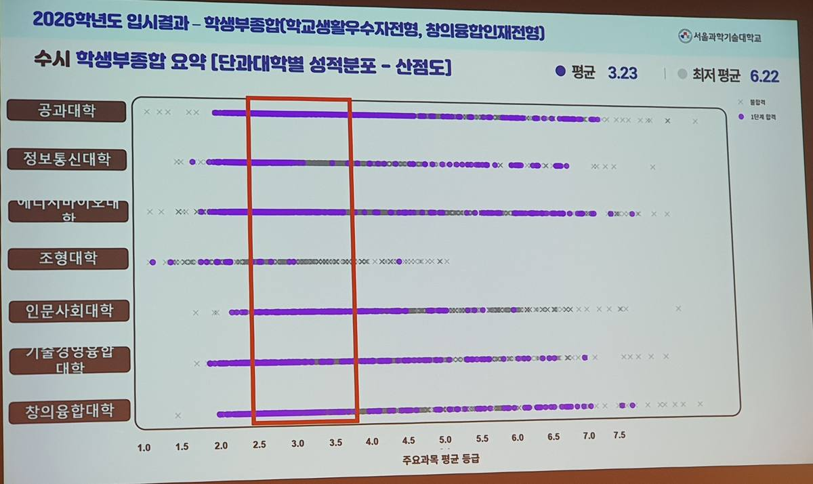
4논술전형 — 수능최저 없음, 수학 논술
- 교과 30% + 논술 70%. 수능최저 없음. 수Ⅰ·수Ⅱ·미적분 범위. 100분 3문항.
- 경쟁률 46.6:1, 충원율 22.6%. 합격 평균 논술점수 91.02/100점 — 높은 수준이지만 수학 자신 있으면 도전 가치.
- 합격자 교과 평균 3.85등급, 최저 합격 6.77등급 — 내신 낮아도 논술 역전 사례 다수.
5정시
- 가·나·다군 분산 선발. 표준점수 반영. 자연 계열 수학 35% 가장 높은 비중.
- 자연 계열 미적분·기하 선택 시 표준점수 7% 가산. 사탐 런 학생도 자연계 지원 시 약 30% 합격 사례.
- 영어 등급점수 환산, 한국사 4등급부터 감점. 수능 백분위 86%대(전년 기준).
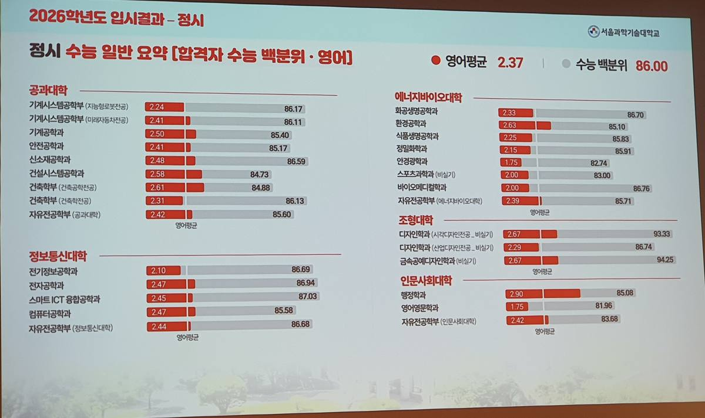
※ 정확한 내용은 대학 홈페이지를 확인하시기 바랍니다.
1한눈에 보는 명지대
이원화 캠퍼스: 인문캠퍼스(서울 서대문구) — 인문·사회·경영·소프트웨어융합대학. 자연캠퍼스(용인) — 공과·화학생명과학·건축·스포츠예술대학. 수시 약 70% 선발. 2027 수시 전 전형 수능최저 없음(2028부터 생김).
- 소프트웨어융합대학(4개 전공)은 공학사 학위이지만 인문캠퍼스 위치 → 입결이 자연캠 공대보다 높게 형성.
- 자율전공학부: 2학년 때 캠퍼스 교차 전공 선택 가능(정원 제한 없음). 미래융합대학·스포츠예술대학 제외 모든 전공 선택 가능. 작년 자연 자율전공 입학생의 34%가 인문계 전공 선택.
- 전과 승인률 96%. 융합전공(사회복지·심리체육 등 메인 전공 없는 분야), 복수전공 모두 운영.
- 미래융합대학(재직자·성인학습자 전용) → 고교 졸업 예정자 지원 불가.
- 아랍지역학과·청소년지도학과 등 서울권 희소 학과 보유. 문헌정보학과 올해 처음 학종에서도 선발.
- 논술 전형 없음. 학폭: 학생부종합 서류평가 100점 감점(합격권 탈락 수준).
2교과 성적 산출
- 학년별 가중치 없음(1·2·3학년 동일). 인문·사회 — 국·수·영·사. 자연·공학 — 국·수·영·과. 석차등급 + 진로선택 성취도 모두 반영.
- 진로선택 환산: A=1등급, B=2등급, C=4등급. 공개 등급보다 최소 0.3 이상 상승. 자연계 많이 차이 나면 최대 0.89 상승 사례.
- 환산 점수 필수 확인 — 5등급 이하 과목 있으면 환산 점수 대폭 하락. 특성화고 전형은 전교과 반영(전문교과 A=3등급).
3학생부교과 — 학교장추천·교과면접
- 학교장추천: 교과 100%, 면접 없음. 고교별 추천 20명 한도(실질 제한 거의 없음). 전년 경쟁률 낮음 → 경기권에서 적극 활용 권장.
- 교과면접전형: 1단계 교과(5배수) → 2단계 교과 70% + 면접 30%. 실질 면접 영향력 70% 이상. 면접위원에게 학생부 미제공, 기초자료(5분 작성) 후 5분 면접.
- 면접 목적: 해당 학과에 대한 관심·적합성 확인. 기출 질문 홈페이지 공개 — 반드시 확인.
- 면접 일정: 10월 마지막 주 토요일(수능 전). 종합 면접은 수능 후(2027: 토=자연, 일=인문 — 전년과 반대).
4학생부종합 — 명지인재서류·명지인재면접·크리스천리더
- 명지인재서류: 서류 100%, 면접 없음. 학업역량 비중 높음. 충원율 높은 편.
- 명지인재면접: 면접 있음. 공동체역량·리더십 우수자 선호. 종합전형 경쟁률 매년 상승(2000명씩 증가). 경기·서울·인천 지원자 가장 많음.
- 크리스천리더: 세례 받은 기독교인 → 목회자 확인서 제출. 평가 기준은 명지인재면접과 동일(신앙심 평가 없음).
- 평가요소: 진로역량이 핵심(서류·면접 공통). 자연·공학 — 물리I 필수 이수(물리II는 권장).
※ 정확한 내용은 대학 홈페이지를 확인하시기 바랍니다.
1한눈에 보는 서울여대
서울 노원구 소재 여자대학교. 2027학년도 총 1,808명 모집 — 수시 60%(1,080명) · 정시 40%(728명). 수도권 합격자 비율 77.7%(수시 72.3%, 정시 85.4%). 경기 지역이 수시 합격자의 40.1%로 가장 많음.
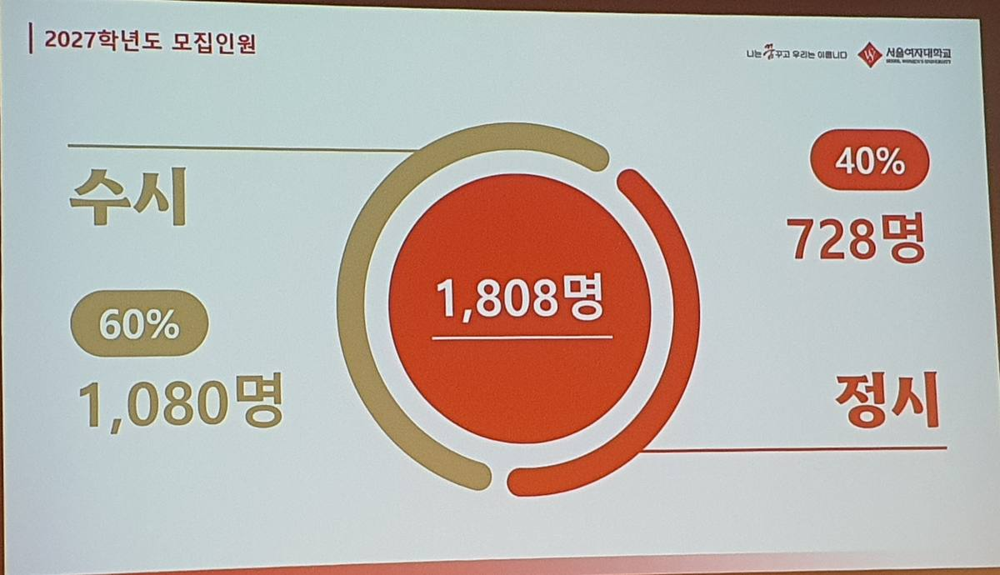
2전형 구조
- 학생부종합: 바름인재서류형(183명) · 바름인재면접형(202명) · SW융합인재전형(33명) · 기독교지도자전형(23명) · 기회균형전형(147명 포함).
- 학생부교과: 교과우수자전형(185명, 학교장추천) · 체육(10명).
- 논술위주: 논술우수자전형(120명, 자유전공학부 광역). 교과 20% 반영. 수능최저 없음.
- 수능최저: 바름인재면접형·SW융합·기독교지도자 = 없음. 교과우수자 = 2합8. 교과체육 = 없음.
3학생부종합 — 바름인재서류·면접·SW융합
- 바름인재서류: 서류 100%, 면접 없음. 학업역량 40% · 진로역량 35% · 공동체역량 25%. 경쟁률 12.6:1, 평균 등급 3.2(전년 3.3에서 소폭 상승).
- 바름인재면접: 1단계 서류(5배수) → 2단계 서류 50% + 면접 50%. 면접 이후 합격자 40%가 바뀜(역전율 높음). 수능 후 면접. 진로역량 40% · 학업역량 35% · 공동체역량 25%. 평균 등급 3.5. 경쟁률 18.1:1.
- SW융합인재: 컴퓨터 관련 역량·AI 활용 관심 강조. 면접형과 동일 방식. 일수 수업 이력 있으면 강점.
▲ 바름인재서류전형 — 경쟁률 최고 26.3:1(일어일문), 최저 6.8:1(소프트웨어전공), 평균 등급 3.2
4학생부교과 — 교과우수자(학교장추천)
- 교과 100%, 수능최저 2합8. 학교장 추천 필요. 최저충족률 89.9% — 수능 보는 학생이라면 거의 충족. 충원율 높음.
- 경쟁률 7.4:1. 교과 평균 3.6등급. 일반고 95%.
- 논술: 논술 80% + 교과 20%, 수능최저 없음. 자유전공학부(광역) 선발. 경쟁률 13.3:1. 논술 잘하면 7등급 이하도 합격 사례 있음.
5정시
- 수능 백분위 전체 평균 86.8점. 가군 6.3:1, 나군 6.0:1, 다군 10.9:1.
- 반영: 국·수·영·탐(상위 1과목) 중 성적 우수 순 35%·30%·20%·15%. 일부 학과(디자인 계열 등) 상위 3개 영역 40%·40%·20%.
- 영어 등급 환산: 1등급=100점, 2등급=97점, 3등급=93점, 4등급=85점, 5등급=70점 — 4등급부터 급격히 하락.
6경기 지역 현황
- 수시 경기 지원 5,890명 중 합격 889명(합격률 15.1%). 경기 수시 합격자 40.1%로 전체 1위.
- 경기 남부 61.8% 지원 vs 합격 55.1%. 경기 북부는 38.2% 지원 대비 합격 44.9% — 북부 학생 합격률 상대적으로 높음.
※ 정확한 내용은 대학 홈페이지를 확인하시기 바랍니다.
1한눈에 보는 한국항공대
1952년 국립 창설, 1979년 한진(대한항공) 사립법인 전환. 경기 고양시 소재. 경의중앙선 한국항공대역 직결 — 신촌·홍대까지 10분. 생활권 사실상 서울. 활주로(고도제한)로 주변 녹지 풍부.
- 모집단위 구조: 입학 시 공과대학 / AI융합대학 / 경상대학 / 자유전공학과로 입학 → 1학년 공통 이수 후 2학년 때 자유롭게 전공 선택(항공정비학과 선택 불가). 자유전공학과 입학 시 운항학과(조종사)도 선택 가능 — 단 자유전공 내 경쟁률 10%만 성공.
- 운항학과(파일럿): 대한항공 기준 비행 200시간 이상 → 미국 비행훈련(약 3년, 3억 이상 비용). LCC는 300시간 기준으로 국내 훈련 가능. 졸업 후 빠른 비용 회수.
- 항공교통학과(관제사): 국가 공무원. 두 번째로 선호하는 학과.
- 항공경영학과: 해외 복수학위(호주 명문대 연계) 가능. NASA·보잉 탐방 프로젝트, 미국·프랑스 인턴 프로그램 운영.
- 서울·경기·인천 학생 약 80% 차지. 취업 후 지방 근무 부담이 항공 관련 취업(16.4%)이 낮은 이유.
2논술전형 — 수학 논술, 학생부 미반영
- 논술 100%, 학생부 미반영(수능최저 있음). 계열별 분리: 공대·AI — 수Ⅰ·수Ⅱ·미적분+확통 포함. 항공운항·이함 — 수Ⅰ·수Ⅱ(미적분 제외). 경상·사회 — 언어 논술.
- 공대 논술 합격점 60점대(100점 만점). 결시율·수능최저 미충족 제외 실질 경쟁률 공대 5:1 수준 — 도전 가치 충분.
- 논술 고사: 수능 후 토요일. 7월 온라인 모의논술 실시 예정.
3학생부교과 — 수능최저 있음 / 순수교과(고교추천)
- 교과전형(수능최저): 교과 100%. 평균 2등급대 중반. 실질 경쟁률은 수능최저 미충족자 제거 후 훨씬 낮아짐.
- 순수교과(고교추천, 수능최저 없음): 추천 인원 제한 없음. 수능최저 없으므로 교과전형보다 약 0.12등급 높게 입결 형성. 운항학과는 두 전형 모두 입결 차이 거의 없음.
- 반영 교과: 공대·AI — 국·수·영·과. 경상 — 국·수·영·사. 진로선택 성취도 추가 반영.
4학생부종합 — 3배수, 학업·진로·공동체 3:5:2
- 1단계 서류 100%(3배수) → 2단계 면접. 학업 30% · 진로 50% · 공동체 20% 평가.
- 전공 적합성 아닌 계열 적합성 위주 평가 — 기계 vs 전자 구분 중요치 않음. 공학적·과학적 성향이 드러나는지가 핵심. 운항학과만 예외(항공 관심도 필수).
- 합격 등급대: 4등급대가 가장 많음(4등급 초·중반까지). 1단계 통과 가능성 기준으로 4등급대까지 지원 권장.
- 면접: 학생부 기반 활동 확인 면접. 생기부 내용 충분히 숙지하고 입장. 면접 자체보다 1단계 통과 여부가 핵심.
- 고른기회전형: 사회적배려대상자·국가유공자. 경쟁률 매우 낮음 — 지원 자격 있으면 적극 활용.
5정시
- 수능 100%, 표준점수 반영. 가·나·다군 분할 선발 — 운항학과·항공교통·자유전공 등 인기 학과 포함. 일부 학생이 세 군 모두 지원하는 사례.
- 공과대학: 2027부터 과학탐구 가산점 신설. 수학 잘하면 수학 반영 비율 높게, 국어 잘하면 국어 비율 높게 — 개인 유불리 반영 구조.
- 전체 평균 등급 약 2등급 중후반. 운항학과는 1등급대. 농어촌·특성화 정원외는 약 3등급대 형성.
- 운항학과: 나군(2027 복귀, 전년 임시 다군 편성). 세 군 동시 지원 가능 학교 특성 활용.
※ 정확한 내용은 대학 홈페이지를 확인하시기 바랍니다.
1한눈에 보는 한양대 ERICA
경기 안산 소재 한양대학교 제2캠퍼스. 정원 약 2,200명. 최근 3년간 첨단융합대학·소프트웨어융합대학 200명 이상 증원 — 수도권 최대 증원. 자율전공학부(LIONS) 전체 모집의 약 40~50% 선발. 2027 주요 특징: 학생부종합 서류형에 수능최저 없음(2028부터 신설).
- LIONS 자율전공학부: 자연계열·인문사회계열·전계열(디자인 포함)로 분리 선발. 2학년 진급 시 희망학과 100% 선택, 정원 제한 없음. 실제로 430명 입학 중 100명이 전자공학 선택(반도체 인기).
- 2028 변경 예고: 교과전형 현역 제한, 서류형 수능최저(2합7) 신설, 진로역량 50%로 확대, 논술전형 신설(수능최저 없이 논술 100% 200명).
2학생부교과 — 교과 100%, 수능최저 2합7
- 교과 100%, 수능최저 2합7(약학과 3합5). 국·영·수·사(인문) 또는 국·영·수·과(자연) 전 과목 반영. 진로선택 A=1등급 환산.
- 전년 경쟁률 5:1, 수능최저 충족률 약 80%, 충원율 150%. 실질 경쟁률 4:1 수준. 충족 학생의 55%가 최초 합격.
- 전체 평균 2.5등급. 자연계 2.4~2.8등급, 인문계 2.7등급, 전계열(자율전공) 2.5등급.
- 약학과: 평균 1.15등급. 전년 수능최저 충족률 70%(직전까지는 50% 미달 → 최저 3합5 유지 시 도전 가치 있음).
- 문화콘텐츠학과: 2년 전 3.39등급으로 낮았다가 작년 경쟁률 3배 급등 후 다시 2등급대 복귀 — 3등급대 학생에게 추천.
- 글로벌문화통상학부: 외고·국제고 학생 절반 차지 → 산포도에서 이 부분 감안 필요.
3학생부종합 서류형 — 수능최저 없음 (2027)
- 서류 100%, 면접 없음. 2027 평가요소 변경: 학업역량 40% · 진로역량 40% · 공동체역량 20%(전년 학업 50%, 진로 30%).
- 진로역량: 전공 관련 교과 이수·성취도 + 비교과 활동. 전체 평균이 낮아도 특정 학과 관련 교과에서 강점 보이면 합격 가능(예: 3D 사이언스 학과 — 3등급 중반도 수학 강점으로 합격).
- 자율전공 자연계: 계열 평가(특정학과 활동 불필요) — 진로 중간에 바뀐 학생도 충분히 합격 가능.
- 전체 평균 3등급 초반. 3.5등급 초과 시 합격 어려움. 일반고 기준.
- 지능형시스템공학과(구 양자컴퓨터공학): 자연계 최저 입결. 전자공학부 쓰기 어려운 3등급대 학생에게 추천. 이름 변경으로 지원 거부감 낮아짐.
4학생부종합 면접형 — 자율전공 전계열만
- 자율전공 전계열(디자인·스포츠과학부 포함)만 면접형으로 선발. 1단계 서류(3배수) → 2단계 면접 30% 추가.
- 면접: 학업역량 70% · 공동체역량 30%. 의사소통역량 30% · 통합적사고역량 70%. 학생부 기반, 1·2학년 활동 위주 질문.
- 결시율 30%, 면접 역전율 30%. 3배수 탈락자 중에서도 추가합격 사례 있음.
- 스포츠과학부: 운동 능력 평가 아님 — 스포츠 마케팅·생리학 활동 강점 학생 지원 권장.
5특별전형 / 정시
- 국방전략기술공학과: 해군 계약학과, 4년 장학금 지원(1학년 100%), 졸업 후 7년 해군 의무복무. 수시 37명(학종 3배수+면접15%+실력검정15%). 합격 평균 3.6~3.7등급.
- 조기취업형 계약학과(3년제): 2학년부터 기업 근무+주말 수업. 기업 50% 장학금 지원. 내신 4~5등급도 합격. 빠른 취업 원하는 학생에게 적합.
- 정시: 수능 100%, 자연계 백분위 평균 82점, 인문계 80점. 정시에서도 4~5등급 내신으로 합격(수능 성적 우선).
※ 정확한 내용은 대학 홈페이지를 확인하시기 바랍니다.